<!doctype html>
<html lang="en">
<head>
  <meta charset="utf-8">
  <meta name="viewport" content="width=device-width, initial-scale=1">
  <title>arxiv digest — 2026-06-02</title>
  <style>
:root {
  --bg: #ffffff;
  --fg: #1f2328;
  --muted: #59636e;
  --border: #d0d7de;
  --card: #f6f8fa;
  --link: #0969da;
}
body {
  max-width: 980px;
  margin: 0 auto;
  padding: 2rem 1rem 5rem;
  font-family: -apple-system, BlinkMacSystemFont, "Segoe UI", Helvetica, Arial, sans-serif;
  line-height: 1.55;
  color: var(--fg);
  background: var(--bg);
}
a { color: var(--link); }
img { max-width: 100%; height: auto; }
pre, code { background: var(--card); border-radius: 6px; }
pre { padding: 1rem; overflow-x: auto; }
blockquote { border-left: 4px solid var(--border); padding-left: 1rem; color: var(--muted); }
details { margin: 0.6rem 0; }
summary { cursor: pointer; font-weight: 600; }
.paper-figures-scroll {
  display: flex;
  gap: 1rem;
  overflow-x: auto;
  overscroll-behavior-x: contain;
  padding: 0.75rem 0.25rem 1rem;
  margin: 1rem 0 1.25rem;
  border-top: 1px solid var(--border);
  border-bottom: 1px solid var(--border);
  scroll-snap-type: x proximity;
}
.paper-figure-card {
  flex: 0 0 min(260px, 72vw);
  scroll-snap-align: start;
  background: var(--card);
  border: 1px solid var(--border);
  border-radius: 12px;
  padding: 0.55rem;
}
.paper-figure-card img {
  display: block;
  width: 100%;
  max-height: 240px;
  object-fit: contain;
  background: white;
  border-radius: 8px;
}
.paper-figure-caption {
  display: block;
  margin-top: 0.5rem;
  color: var(--muted);
  font-size: 0.85rem;
}
.figure-strip-hint {
  color: var(--muted);
  font-size: 0.9rem;
  margin-bottom: -0.3rem;
}
</style>
  <!-- MathJax: renders $...$ inline math and $$...$$ display math, plus
       \(...\) and \[...\]. Loaded from the official CDN; works offline
       once cached. Configured to skip code/pre blocks so arxiv IDs that
       look like dollar amounts don't get mangled. -->
  <script>
    window.MathJax = {
      tex: {
        inlineMath: [['$', '$'], ['\\(', '\\)']],
        displayMath: [['$$', '$$'], ['\\[', '\\]']],
        processEscapes: true,
        processEnvironments: true
      },
      options: {
        skipHtmlTags: ['script', 'noscript', 'style', 'textarea', 'pre', 'code'],
        ignoreHtmlClass: 'tex2jax_ignore',
        processHtmlClass: 'tex2jax_process'
      }
    };
  </script>
  <script id="MathJax-script" async
    src="https://cdn.jsdelivr.net/npm/mathjax@3/es5/tex-chtml.js"></script>
</head>
<body>
<header style="background-color: #333; color: white; padding: 15px; margin-bottom: 20px;">
  <h1 style="margin: 0; font-size: 24px;">
    <a href="https://ochelpan.github.io/arXiv_clean/" style="color: white; text-decoration: none;">Main</a>
  </h1>
</header>

<h1>Daily arXiv Report</h1>

<hr>
<p>
<a href="index.html">← Index</a>
 · <a href="papers_02.html">← Previous</a> · <a href="papers_04.html">Next →</a>
</p>
<hr>

<h2>Papers 41–60</h2>
<p><a id="paper-2606.00207"></a></p>
<h3 id="aharonov-casher-chern-bands-for-ultracold-dark-state-atoms"><a href="http://arxiv.org/abs/2606.00207v1">Aharonov-Casher Chern bands for ultracold dark state atoms</a></h3>
<p><strong>Authors:</strong> Domantas Burba, Dominykas Borodinas, Gediminas Juzeliūnas<br>
<strong>Type:</strong> theory · <strong>Category:</strong> other · <strong>PDF:</strong> <a href="https://arxiv.org/pdf/2606.00207v1">https://arxiv.org/pdf/2606.00207v1</a><br>
<strong>Analysis basis:</strong> full PDF text, analyzed in chunks
<strong>Topic relevance:</strong> 🔥 <code>analog quantum simulation</code> <strong>4/5</strong></p>
<div class="figure-strip-hint">↔ Scroll figures horizontally</div>
<div class="paper-figures-scroll">
<figure class="paper-figure-card">
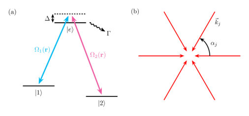
<figcaption class="paper-figure-caption"><b>Fig 1.</b> FIG. 1. a) The Lambda scheme of the atom-light coupling. Laser fields characterized by Rabi frequencies Ω1 and Ω2 cou- ple resonantly (or nearly resonantly with a single photon de- tuning ∆) two atomic ground states |1⟩and |2⟩with a com- mon excited state |e⟩. b) The AC condition can be fulfilled if the Rabi frequency Ω1 represents a superposition of the planes characterized by wave-vectors kj with equal widths |kj| = κ, whereas Ω2 is the corresponding superposition of the plane waves with wave-vectors −kj, and properly chosen amplitudes and phases (see Sec. IV D).</figcaption>
</figure>
<figure class="paper-figure-card">
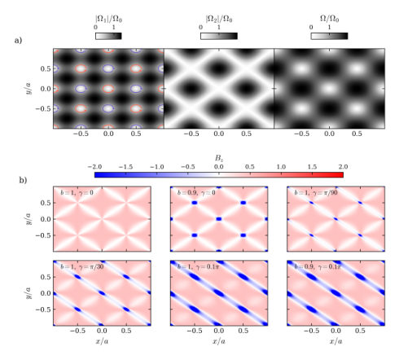
<figcaption class="paper-figure-caption"><b>Fig 2.</b> FIG. 2. (a) Rabi frequencies Ω1,2 given by Eqs. (40)-(41) together with the total Rabi frequency Ωfor the perfect sit- uation where b = 1 and γ = 0. The arrows show the phase winding of Ω1 around its zero points. (b) The corresponding effective magnetic field for b and γ around b = 1 and γ = 0. Here and in other figures the distance is measured in the units of the lattice constant a = 2π/κ.</figcaption>
</figure>
<figure class="paper-figure-card">

<figcaption class="paper-figure-caption"><b>Fig 3.</b> Figure 2(a) presents the Rabi frequencies given by Eqs. (40)-(41) with the upper sign of ± in Ω1 (r) and beiγ = 1, while Fig. 2(b) plots the corresponding effec- tive magnetic field Bz when beiγ is equal to unity or close to this value. The geometric scalar potential ϕ is related to the effective magnetic field by the AC con- dition (25), so it has not been plotted. For beiγ ̸= 1 and beiγ −1 ≪1, the magnetic field is composed of a smooth positive background magnetic field and nar- row spots of a large negative magnetic field concentrated around the minima of the total Rabi frequency Ω. The latter narrow spots compensate for the background mag- netic field, so that the total magnetic flux...</figcaption>
</figure>
<figure class="paper-figure-card">
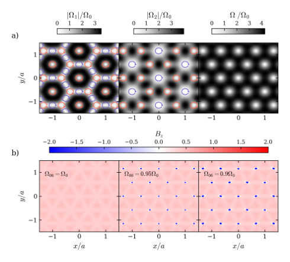
<figcaption class="paper-figure-caption"><b>Fig 4.</b> FIG. 4. (a) Rabi frequencies given by Eqs. (35), (38) and (39) with N = 6 for βj = 0 and Ω0j = Ω0, with j = 1, 2, . . . , 6. The arrows show the phase winding of Ω1 and Ω2 around their zero points. (b) The corresponding magnetic field when Ω0j = Ω0 for j ̸= 3 and Ω03 is close to Ω0.</figcaption>
</figure>
<figure class="paper-figure-card">
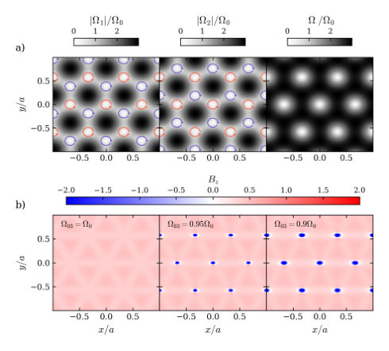
<figcaption class="paper-figure-caption"><b>Fig 5.</b> FIG. 3. (a) Rabi frequencies given by Eqs. (45)-(46) with Ω01 = Ω02 = Ω03 = Ω0. The arrows show the phase winding of Ω1 and Ω2 around their zero points. (b) The corresponding effective magnetic field for Ω01 = Ω02 = Ω0 and the values of Ω03 close to Ω0.</figcaption>
</figure>
</div>

<p><strong>Summary.</strong> This paper explores how to engineer topological flat bands in ultracold atoms by satisfying the Aharonov-Casher condition within a $\Lambda$-type coupling scheme. The authors demonstrate that while ideal conditions yield perfect topology, a specific combination of slight imperfections—deviation from perfect tuning and finite coupling strength—can actually restore the desired perfectly flat, topologically robust lowest energy band. This makes the system a powerful simulator for fractional quantum Hall physics.</p>
<p><strong>Why it may be interesting.</strong> This work provides a concrete, controllable platform (ultracold atoms) to engineer and observe topological phenomena like Chern insulators, offering a pathway to simulate fractional quantum Hall states in a highly tunable setting.</p>
<details>
<summary>Detailed structure</summary>
<p><strong>Main problem.</strong> The study investigates the conditions required to realize a perfectly flat, topologically non-trivial energy band (Chern band) for ultracold atoms by adiabatically following the dark state.</p>
<p><strong>Main result.</strong> A completely flat lowest band with perfect topology can be achieved by combining two imperfections: deviation from perfect fine-tuning and finite atom-light coupling strength.</p>
<p><strong>Method.</strong> The analysis uses the Aharonov-Casher (AC) condition, relating geometric potentials, and models the Rabi frequencies as superpositions of plane waves to engineer the required effective magnetic field.</p>
<p><strong>Model / system.</strong> The system involves ultracold atoms in a $\Lambda$-type atom-light coupling scheme, where the dynamics are governed by the dark state manifold derived from the atom-light interaction Hamiltonian.</p>
<p><strong>Key observables.</strong> Lowest energy band flatness, Chern number, geometric vector potential (A) and scalar potential ($\phi$), and the effective magnetic field ($B_z$).</p>
<p><strong>Important parameters / regimes.</strong> Rabi frequencies ($\Omega_1, \Omega_2$), lattice parameters ($N=3, 4, 6$), amplitude imbalance ($1-b$), and phase mismatch ($\gamma$).</p>
<p><strong>Assumptions / limitations.</strong> The analysis relies on the adiabatic approximation, which is valid for sufficiently strong coupling ($\Omega_0 	o \infty$).</p>
<p><strong>Figures summary.</strong> Figures illustrate the Rabi frequencies and effective magnetic field for different plane wave superpositions ($N=3, 4, 5, 6$), showing the transition from ideal flux quantization to band broadening upon deviation from perfect tuning.</p>
<p><strong>Paper structure.</strong> The paper establishes the AC condition, derives the necessary structure for Rabi frequencies using plane wave superpositions, analyzes specific cases ($N=3, 4$), and concludes by showing that combined imperfections can restore the ideal flat band topology.</p>
</details>
<details>
<summary>Abstract</summary>
<p>We consider the Aharonov-Casher (AC) condition for ultracold atoms adiabatically following the dark-state in a $Λ$-type atom-light coupling scheme. The AC condition establishes a relation between the geometric scalar potential and the synthetic magnetic field, resulting in a fully degenerate lowest Landau-level-like band even if the magnetic field is inhomogeneous but has a proper sign. We derive a general requirement for the atom-light coupling under which the AC condition applies. The requirement holds if the Rabi frequencies of the $Λ$ scheme are the superposition of plane waves with the appropriate amplitudes and phases. In particular, the Rabi frequencies made of $N=3,\,4,\,6$ fine tuned plane waves yield a smooth background magnetic field of definite sign, as well as an array of non-measurable Aharonov-Bohm flux singularities. Departing from the fine tuning, the latter singularities broaden into narrow subwavelength patches of the opposite magnetic field, which broaden the lowest energy band. The lowest band is broadened also for the fine tuned situation due to deviation from the adiabatic approach because of the finite atom-light coupling strength. It is shown that a proper combination of the two imperfections (departure from fine tuning and finite atom-light coupling strength) can lead to a completely flat lowest band, which furthermore is characterized by the perfect topology needed for simulating the fractional Hall states.</p>
</details>
<p><sub><a href="#top">↑ back to top</a></sub></p>

<p><a id="paper-2606.00446"></a></p>
<h3 id="individually-tunable-sisige-quantum-dot-operating-voltages-via-gate-biased-illumination"><a href="http://arxiv.org/abs/2606.00446v1">Individually tunable Si/SiGe quantum dot operating voltages via gate-biased illumination</a></h3>
<p><strong>Authors:</strong> Jared Benson, Sanghyeok Park, Owen M. Eskandari, M. A. Wolfe, Brighton X. Coe, J. P. Dodson, S. N. Coppersmith, Mark Friesen, M. A. Eriksson<br>
<strong>Type:</strong> experiment · <strong>Category:</strong> quantum information and computing · <strong>PDF:</strong> <a href="https://arxiv.org/pdf/2606.00446v1">https://arxiv.org/pdf/2606.00446v1</a><br>
<strong>Analysis basis:</strong> full PDF text, analyzed in chunks
<strong>Topic relevance:</strong> 🔥 <code>QC/QI experiment</code> <strong>4/5</strong></p>
<div class="figure-strip-hint">↔ Scroll figures horizontally</div>
<div class="paper-figures-scroll">
<figure class="paper-figure-card">
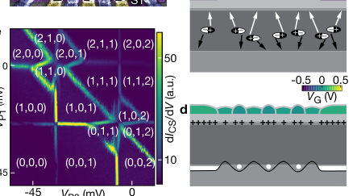
<figcaption class="paper-figure-caption"><b>Fig 1.</b> Figure 1: Gate-biased illumination enables low-voltage operation of quantum dots. a A false-color SEM micrograph of a device that is nominally identical to the one measured here. b-d Cross-sections of the gate stack and upper layers of the Si/Si0.7Ge0.3 heterostructure along the white dashed line in (a) showing the gate-biased illumination process. b Large and non-uniform gate voltages are required to form a triple quantum dot due to fixed oxide charges and interface trapped charges (not shown). c The device is illuminated with a 780 nm laser while its gates are biased with dc voltages. Photo-generated electron-hole pairs (white-black ovals) move to screen the electric fields in the quantum...</figcaption>
</figure>
<figure class="paper-figure-card">
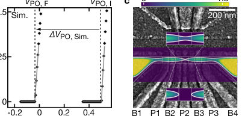
<figcaption class="paper-figure-caption"><b>Fig 2.</b> Figure 2: Characterizing gate-biased illumination by simulating and measuring gate pinch-off voltage shifts. a Experimental pinch-off curves for the P2 plunger gate measured before and after illuminating the device with VP2 = −0.5 V. The pinch-off voltages from each measurement are indicated by the vertical dashed lines and the pinch-off voltage shift is the difference between the initial and final pinch-off voltages. The voltages applied to the gates during this measurement are shown in the inset of (b). b The model used to solve the charge density at the oxide- semiconductor interface during the gate-biased illumination. Here, accumulation occurs in charge-trap states at the interface...</figcaption>
</figure>
<figure class="paper-figure-card">
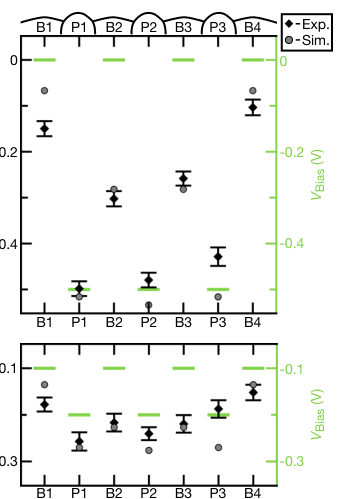
<figcaption class="paper-figure-caption"><b>Fig 3.</b> Figure 3: Experimental (diamonds) and simulated (circles) shifts in pinch-off voltages showing good agreement for the following cases of gate-biased illumination: a case 1, large voltage difference between plunger and barrier gates (−0.5 V P1-P3 and 0 V B1-B4), b case 2, smaller difference in plunger and barrier gate voltages (−0.2 V P1-P3 and −0.1 V B1-B4). For the experimental results, the data points are the mean pinch-off voltage shifts from 11 repetitions of each illumination and the error bars are the standard deviations. The green lines indicate the voltages applied to each gate during the illumination.</figcaption>
</figure>
<figure class="paper-figure-card">
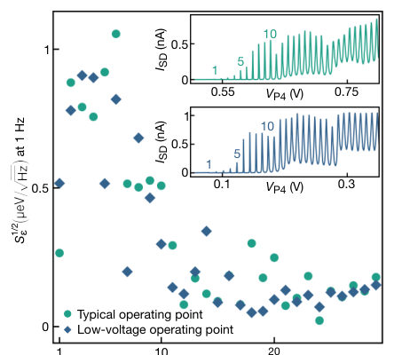
<figcaption class="paper-figure-caption"><b>Fig 4.</b> Figure 4: Charge noise comparison between a typical operating regime and a low-voltage operating regime. Main panel: charge noise S1/2 ε at 1 Hz for each of the first 29 charge sensor Coulomb peaks at a typical device operation point compared to the same peaks in a low-voltage operating regime following a gate-biased illumination. Inset panels: the Coulomb peaks used when measuring the charge noise in each case. More details about the charge noise measurements can be found in the Supporting Information.</figcaption>
</figure>
</div>

<p><strong>Summary.</strong> The authors demonstrate a technique called gate-biased illumination to precisely and repeatably tune the operating voltages of Si/SiGe quantum dot qubits. By trapping charges at the oxide interface using near-infrared light, they can achieve uniform, low-voltage operation across multiple gates without detrimentally affecting the measured charge noise, advancing the scalability of solid-state quantum computing.</p>
<p><strong>Why it may be interesting.</strong> This work provides a novel, electrically controllable method to engineer the electrostatic environment of solid-state qubits, which is crucial for scaling up quantum processors and minimizing power consumption.</p>
<details>
<summary>Detailed structure</summary>
<p><strong>Main problem.</strong> Semiconductor quantum dot qubits require significantly different gate voltages on each gate to reach the correct operating point, complicating device tuning and limiting low-power operation.</p>
<p><strong>Main result.</strong> Gate-biased illumination allows for the controllable and repeatable tuning of operating voltages on a gate-by-gate basis, enabling uniform and small operating voltages without increasing charge noise.</p>
<p><strong>Method.</strong> The technique involves illuminating the Si/SiGe quantum dot device with near-infrared light while applying specific DC gate voltages, which modifies the trapped charge distribution at the oxide-semiconductor interface.</p>
<p><strong>Model / system.</strong> The platform is a Si/SiGe quantum dot device patterned on a heterostructure. The mechanism relies on photo-generated electron-hole pairs trapping charges at the oxide-semiconductor interface, which shifts the local electric fields and thus the operating voltages.</p>
<p><strong>Key observables.</strong> Operating voltages, pinch-off voltages ($V_{PO}$), and charge noise ($S_{1/2}^{\epsilon}$ at 1 Hz).</p>
<p><strong>Important parameters / regimes.</strong> Near-infrared illumination (e.g., 780 nm laser), gate voltages, and the resulting voltage shifts (e.g., reducing voltage difference from 340 mV to 114 mV).</p>
<p><strong>Assumptions / limitations.</strong> The trapped charge distribution established during illumination remains 'frozen' in place, and the charge noise measurement is unaffected by this voltage shift.</p>
<p><strong>Figures summary.</strong> Figures show the device structure, stability diagrams illustrating low-voltage operation after illumination, and comparisons of charge noise spectra before and after tuning.</p>
<p><strong>Paper structure.</strong> The paper introduces the problem of non-uniform gate voltages, details the gate-biased illumination method, presents experimental measurements of voltage shifts and charge noise, and validates the underlying physics using self-consistent Schrödinger-Poisson simulations.</p>
</details>
<details>
<summary>Abstract</summary>
<p>Semiconductor quantum dot qubits often require very different voltages on each gate to bring them to a correct operating point. Here, we present a method by which one can controllably and repeatably alter the nanoscale trapped charge distribution at an oxide-semiconductor interface. We demonstrate this method on a Si/SiGe quantum dot device, and we find that the operating voltages can be controlled and made much more uniform. The method relies on illumination with near-infrared light in the presence of applied gate voltages, and it enables the tuning of the device operating point on a gate-by-gate basis. We present an explanation of the underlying physics using self-consistent Schrödinger-Poisson simulations. As an application of this method, we tune a triple quantum dot to have uniform and small operating voltages in the (1,1,1) charge configuration. Importantly, we show that shifting the operating voltages in this way does not change the measured charge noise.</p>
</details>
<p><sub><a href="#top">↑ back to top</a></sub></p>

<p><a id="paper-2606.02560"></a></p>
<h3 id="a-mid-infrared-platform-based-on-strontium-tweezer-arrays"><a href="http://arxiv.org/abs/2606.02560v1">A Mid-Infrared Platform Based on Strontium Tweezer Arrays</a></h3>
<p><strong>Authors:</strong> Aaron Holman, Ximo Sun, Bojeong Seo, Joshua Corn, Zezheng Zhu, Yuan Xu, Jiahao Wu, Nanfang Yu, Dmytro Filin, Marianna Safronova, Sebastian Will<br>
<strong>Type:</strong> experiment · <strong>Category:</strong> other · <strong>PDF:</strong> <a href="https://arxiv.org/pdf/2606.02560v1">https://arxiv.org/pdf/2606.02560v1</a><br>
<strong>Analysis basis:</strong> full PDF text, analyzed in chunks
<strong>Topic relevance:</strong> <code>Dicke superradiance</code> <strong>3/5</strong> · <code>analog quantum simulation</code> <strong>3/5</strong> · <code>correlated / nonlocal dissipation</code> <strong>3/5</strong> · <code>Rydberg arrays</code> <strong>2/5</strong> · <code>free-space correlated emission</code> <strong>2/5</strong> · <code>quantum optics experiment</code> <strong>2/5</strong> · <code>superradiant laser</code> <strong>2/5</strong> · <code>QC/QI experiment</code> <strong>1/5</strong> · <code>driven-dissipative phase transition</code> <strong>1/5</strong> · <code>interference shaping light</code> <strong>1/5</strong> · <code>non-equilibrium dynamics</code> <strong>1/5</strong> · <code>quantum measurements</code> <strong>1/5</strong></p>
<div class="figure-strip-hint">↔ Scroll figures horizontally</div>
<div class="paper-figures-scroll">
<figure class="paper-figure-card">
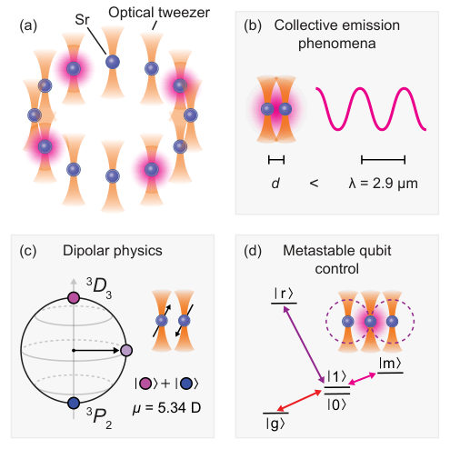
<figcaption class="paper-figure-caption"><b>Fig 1.</b> FIG. 1. Experimental potential of the strontium 2.9 µm transition in atomic tweezer arrays. (a) Optical tweezers, at a magic wave- length for the 2.9 µm transition, allow arrangements of single atoms with programmable geometries. (b) Subwavelength arrays, where the distance d is smaller than the emission wavelength λ, open a path to studying collective emission phenomena. (c) The transition dipole moment of 5.34 Debye can enable new systems with elastic dipole-dipole interactions, realizing effective spin-spin coupling. (d) Coupling of 2.9 µm light to the fine-structure qubit opens novel op- portunities for cooling and quantum state control.</figcaption>
</figure>
<figure class="paper-figure-card">
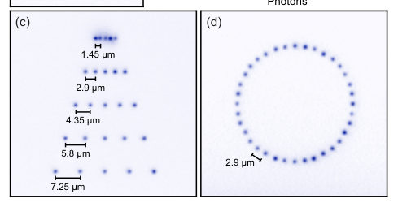
<figcaption class="paper-figure-caption"><b>Fig 2.</b> FIG. 3. Single-atom preparation and imaging in 597 nm tweezers. (a) An averaged image of a 5 × 5 atomic tweezer array with 5 µm spacing. (b) Back-to-back imaging analysis for a typical trap, high- lighted with a red box in panel (a). (c) Averaged fluorescence image of one-dimensional chains with λ/2, λ, 3/2λ, 2λ and 5/2λ spacing. (d) Averaged fluorescence image of a ring-shaped array with 36 sites spaced by λ. Each image in (a), (c), and (d) is an average of 100 individual images without parity projection.</figcaption>
</figure>
<figure class="paper-figure-card">
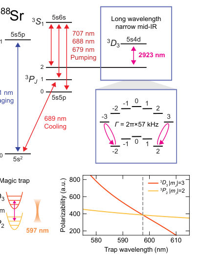
<figcaption class="paper-figure-caption"><b>Fig 3.</b> FIG. 2. Strontium level structure and trapping wavelength. (a) Level diagram of 88Sr and relevant transitions. The mid-infrared 2,923 nm transition from 3P2 to 3D3 is central to this work. The mJ = ±2 →±3 transitions form closed two-level systems. (b) (left) Under magic trapping conditions, the optical tweezer potentials for atoms in the 3P2 and 3D3 states are identical. (right) Theoretical prediction of the polarizability for the mJ = ±2 →±3 transitions, indicating magic conditions at around 597.5 nm.</figcaption>
</figure>
<figure class="paper-figure-card">
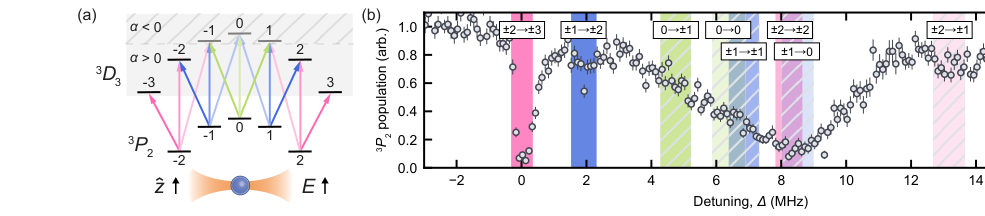
<figcaption class="paper-figure-caption"><b>Fig 4.</b> FIG. 4. Spectroscopy of the 2.9 µm 3P2 →3D3 transition in a Sr tweezer array at 597 nm. (a) An energy level diagram illustrating the shifts induced by 597 nm light on the Zeeman sublevels of the 3P2 and 3D3 manifolds; levels in the solid gray (hatched gray) are trapped (anti- trapped). The tweezer light is linearly polarized. (b) Loss spectrum of tweezer-trapped atoms following illumination with 2.9 µm light. Here, ∆is defined as the detuning relative to the free-space resonance. Vertical color bars indicate the predicted resonance shifts using the same color scheme as in (a); hatched color bars indicate transitions to anti-trapped levels.</figcaption>
</figure>
<figure class="paper-figure-card">
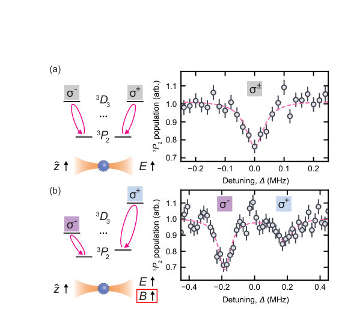
<figcaption class="paper-figure-caption"><b>Fig 5.</b> FIG. 5. Precision spectroscopy of the closed |mJ| = 2 →3 transition. (a) In the absence of a magnetic field, a linewidth of Γ/(2π) = 74(10) kHz is measured, obtained from a Lorentzian fit. (b) In the presence of a magnetic field the previously degenerate transitions mJ = ±2 → ±3 split symmetrically. The splitting is about 0.4 MHz. The mag- netic field is about 0.14(1) G and aligned along the polarization vec- tor of the optical tweezers. The linewidth of the left dip and the right dip are Γ/(2π) = 90(15) and 107(20) kHz, respectively.</figcaption>
</figure>
</div>

<p><strong>Summary.</strong> The research establishes a novel platform using strontium atoms trapped in optical tweezer arrays, specifically engineered to access a mid-infrared transition at 2,923 nm. Key achievements include high-fidelity single-atom trapping and demonstrating resolved-sideband cooling in the metastable state. This platform opens new avenues for studying dipolar many-body physics and quantum control beyond traditional lattice setups.</p>
<p><strong>Why it may be interesting.</strong> This work significantly expands the accessible physics regime for trapped atoms by utilizing mid-infrared transitions, enabling studies of dipolar interactions and collective effects in flexible, subwavelength geometries.</p>
<details>
<summary>Detailed structure</summary>
<p><strong>Main problem.</strong> To develop a versatile platform using subwavelength atomic tweezer arrays to study collective emission phenomena, such as superradiance and subradiance, by accessing mid-infrared transitions.</p>
<p><strong>Main result.</strong> The authors successfully demonstrated single-atom preparation, high-fidelity imaging, and resolved-sideband cooling of trapped strontium atoms using a mid-infrared transition at 2,923 nm.</p>
<p><strong>Method.</strong> The experiment utilizes optical tweezer arrays generated via holographic metasurfaces to trap strontium atoms, followed by precision spectroscopy and cooling measurements on the mid-IR transition.</p>
<p><strong>Model / system.</strong> The system involves Strontium atoms trapped in optical tweezer arrays, leveraging a mid-infrared transition ($5s5p~^3P_2 
ightarrow 5s4d~^3D_3$) at 2,923 nm. The trapping is stabilized using a magic wavelength at 597.14 nm.</p>
<p><strong>Key observables.</strong> Single-atom imaging fidelity (99.7%), cooling temperature ($\approx 14 \mu	ext{K}$ radial), and linewidth measurements ($\Gamma/(2\pi) = 74 \pm 10 	ext{ kHz}$).</p>
<p><strong>Important parameters / regimes.</strong> Mid-IR transition wavelength (2,923 nm), magic trapping wavelength (597.14 nm), and trap frequencies ($\approx 95 	ext{ kHz}$).</p>
<p><strong>Assumptions / limitations.</strong> The model for temperature extraction assumes the axial temperature remains constant during radial cooling measurements.</p>
<p><strong>Figures summary.</strong> Figures illustrate the potential of the 2.9 $\mu$m transition for subwavelength arrays and qubit control; spectroscopy shows level structure and magnetic field effects; and cooling figures compare uncooled vs. cooled recapture probabilities.</p>
<p><strong>Paper structure.</strong> The paper details the platform realization using metasurfaces, followed by single-atom preparation and imaging; then, it presents precision spectroscopy of the mid-IR transition; finally, it demonstrates resolved-sideband cooling using time-of-flight measurements.</p>
</details>
<details>
<summary>Abstract</summary>
<p>Subwavelength atomic tweezer arrays, in which atoms can be positioned at distances smaller than their emission wavelength, have been proposed as a versatile platform to study collective emission phenomena, such as superradiance and subradiance. Experimentally, the realization of such arrays has been a challenge as typical emission wavelengths in the visible or near-infrared are short compared to typical tweezer spacings in the micrometer range. Here, we use $^{88}$Sr atoms in optical tweezer arrays to access a mid-infrared transition at 2,923 nm ($5s5p\:^{3}P_{2} \rightarrow\, 5s4d\:^{3}D_{3}$). We identify a magic trapping wavelength at 597.14(3) nm and demonstrate single-atom preparation and imaging with high fidelity. In addition, using 2,923 nm light, we demonstrate resolved-sideband cooling of tweezer-trapped strontium. Beyond enabling studies of collective emission phenomena in flexible arrangements of atoms, our platform opens novel opportunities for dipolar many-body physics and enhanced control over Rydberg dynamics and the strontium fine-structure qubit.</p>
</details>
<p><sub><a href="#top">↑ back to top</a></sub></p>

<p><a id="paper-2606.02157"></a></p>
<h3 id="vibrational-resonance-in-a-one-dimensional-dissipative-bose-josephson-junction"><a href="http://arxiv.org/abs/2606.02157v1">Vibrational resonance in a one-dimensional dissipative Bose-Josephson junction</a></h3>
<p><strong>Authors:</strong> Abhik Kumar Saha<br>
<strong>Type:</strong> theory · <strong>Category:</strong> quantum gases · <strong>PDF:</strong> <a href="https://arxiv.org/pdf/2606.02157v1">https://arxiv.org/pdf/2606.02157v1</a><br>
<strong>Analysis basis:</strong> full PDF text, analyzed in chunks
<strong>Topic relevance:</strong> <code>analog quantum simulation</code> <strong>3/5</strong> · <code>driven-dissipative phase transition</code> <strong>3/5</strong> · <code>methods for driven-dissipative</code> <strong>3/5</strong> · <code>non-equilibrium dynamics</code> <strong>3/5</strong> · <code>Keldysh / 2PI / non-Gaussian methods</code> <strong>2/5</strong> · <code>correlated / nonlocal dissipation</code> <strong>2/5</strong> · <code>non-equilibrium universality</code> <strong>2/5</strong> · <code>Frenkel-Kontorova</code> <strong>1/5</strong></p>
<div class="figure-strip-hint">↔ Scroll figures horizontally</div>
<div class="paper-figures-scroll">
<figure class="paper-figure-card">
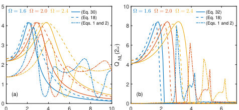
<figcaption class="paper-figure-caption"><b>Fig 1.</b> FIG. 1. (Color Online) (a) Linear response amplitude QL(ω) and (b) nonlinear response amplitude QNL(2ω) of the 1D dis- sipative BJJ for Λ0/γ = 0.5, with a positive interaction pa- rameter in the π-phase mode, in response to a low-frequency signal c cos(ωt) under the influence of a high-frequency drive g cos(Ωt). Results are shown for three different values of Ω= 1.6 (blue), 2.0 (orange), and 2.4 (yellow), with fixed pa- rameters c = 0.05 and ω = 0.1. The solid lines represent the analytical results for QL (Eq. (30)) and QNL (Eq. (32)). The dashed lines correspond to numerical simulations of QL(ω) and QNL(2ω) using Eq. (18). The dash-dotted lines repre- sent numerical simulations using Eqs....</figcaption>
</figure>
<figure class="paper-figure-card">
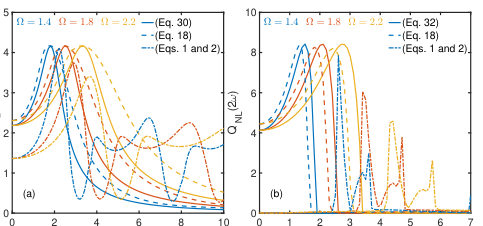
<figcaption class="paper-figure-caption"><b>Fig 2.</b> FIG. 2. (Color Online) (a) Linear response amplitude QL(ω) and (b) nonlinear response amplitude QNL(2ω) of the 1D dissipative BJJ for Λ0/γ = −0.5, with a negative interac- tion parameter in the zero-phase mode, in response to a low-frequency signal c cos(ωt) under the influence of a high- frequency drive g cos(Ωt). Results are shown for three dif- ferent values of Ω= 1.4 (blue), 1.8 (orange), and 2.2 (yel- low), with fixed parameters c = 0.05 and ω = 0.1. The solid lines represent the analytical results for QL (Eq. 30) and QNL (Eq. 32). The dashed lines correspond to numerical simula- tions of QL(ω) and QNL(2ω) using Eq. (18). The dash-dotted lines represent numerical simulations using Eqs....</figcaption>
</figure>
<figure class="paper-figure-card">
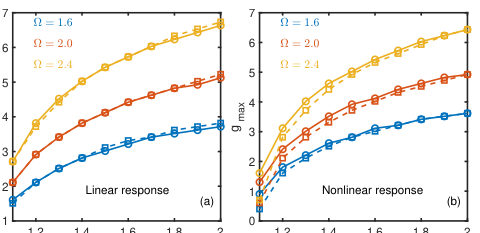
<figcaption class="paper-figure-caption"><b>Fig 3.</b> FIG. 3. (Color Online) The dependence of the position of the maximum amplitude (gmax) on the interaction parameter Λ0 is shown for (a) the linear response QL(ω) and (b) the nonlinear response QNL(2ω), for three different values of the high-frequency parameter Ω= 1.6 (blue), 2.0 (orange), and 2.4 (yellow). The solid lines with markers represent the re- sults obtained from Eq. (30) for QL and Eq. (32) for QNL, while the dashed lines with markers correspond to the results obtained from Eq. (18). Throughout the simulation, we have fixed the dissipation coefficient γ = 2.4 for both linear and nonlinear response cases. In both cases, the other parameters are fixed at ω = 0.1 and c = 0.05...</figcaption>
</figure>
<figure class="paper-figure-card">
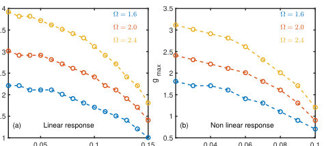
<figcaption class="paper-figure-caption"><b>Fig 4.</b> FIG. 5. (Color Online) The dependence of the position of the maximum amplitude (gmax) on c is shown for (a) the linear response QL(ω) and (b) the nonlinear response QNL(2ω), for three different values of the high-frequency parameter Ω= 1.6 (blue), 2.0 (orange), and 2.4 (yellow). The dashed lines with markers represent the results obtained from Eq. (18). Here, we fix Λ0/γ = 0.5, and the other parameters are set to ω = 0.1 and c = 0.05 throughout the simulations.</figcaption>
</figure>
<figure class="paper-figure-card">
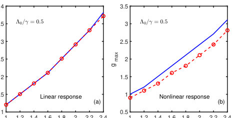
<figcaption class="paper-figure-caption"><b>Fig 5.</b> FIG. 4. (Color Online) The variation of the position of the maximum amplitude gmax with the high-frequency parameter Ωis shown for (a) the linear response QL(ω) and (b) the nonlinear response QNL(2ω), with Λ0/γ = 0.5. The blue solid line represents the results obtained from Eq. (30) for QL and Eq. (32) for QNL, while the dashed red line with markers corresponds to the results obtained from Eq. (18). In both cases, the other parameters are fixed at ω = 0.1 and c = 0.05 throughout the simulations.</figcaption>
</figure>
</div>

<p><strong>Summary.</strong> This study analyzes the vibrational and nonlinear response of a 1D dissipative Bose-Josephson junction driven by two distinct frequencies. By employing advanced perturbation techniques, the authors show that the high-frequency drive breaks symmetry, allowing for a measurable second-harmonic response. This confirms a controllable mechanism for generating nonlinear dynamics in such quantum bosonic systems.</p>
<p><strong>Why it may be interesting.</strong> This work provides a concrete, analytically tractable model for observing nonlinear harmonic generation and vibrational resonance in a system relevant to ultracold atomic physics (Bose-Josephson junctions).</p>
<details>
<summary>Detailed structure</summary>
<p><strong>Main problem.</strong> The paper investigates the linear and nonlinear response of a one-dimensional dissipative Bose-Josephson junction (BJJ) when subjected to simultaneous weak low-frequency probing and rapid high-frequency external driving.</p>
<p><strong>Main result.</strong> The high-frequency modulation dynamically breaks the system's symmetry, enabling a finite second-harmonic response that would otherwise be forbidden, demonstrating controllable vibrational and nonlinear resonance.</p>
<p><strong>Method.</strong> The authors employed time-scale separation and perturbative analysis on the dissipative two-mode BJJ equations to derive analytical expressions for the linear and nonlinear response amplitudes.</p>
<p><strong>Model / system.</strong> The physical system is a one-dimensional dissipative Bose-Josephson junction, modeled using a two-mode approach derived from Bose-Einstein condensates in double-well potentials. The dynamics are governed by coupled, dissipative equations.</p>
<p><strong>Key observables.</strong> Linear response amplitude ($Q_L(\omega)$) at the fundamental frequency and nonlinear response amplitude ($Q_{NL}(2\omega)$) at the second harmonic.</p>
<p><strong>Important parameters / regimes.</strong> Dissipation ($\gamma$), interaction strength ($\Lambda_0$), low-frequency probe amplitude ($c$), and high-frequency driving strength ($g$ or $\Omega$).</p>
<p><strong>Assumptions / limitations.</strong> The analysis relies on small approximations for the population imbalance ($z$) and relative phase ($ heta$), and the use of time-scale separation to decouple slow and fast dynamics.</p>
<p><strong>Figures summary.</strong> Figures illustrate the resonance enhancement of both linear and nonlinear responses by varying the driving strength ($g$ or $\Omega$), and show the dependence of the resonance position ($g_{max}$) on the interaction parameter ($\Lambda_0$) and the probe amplitude ($c$).</p>
<p><strong>Paper structure.</strong> The paper progresses by deriving an effective higher-order nonlinear equation, applying time-scale separation to simplify the dynamics, and then using perturbative analysis to calculate the analytical expressions for the linear and nonlinear responses, validating these results against direct numerical simulations.</p>
</details>
<details>
<summary>Abstract</summary>
<p>We investigate the linear and nonlinear response of a one-dimensional dissipative Bose-Josephson junction subjected simultaneously to a weak low-frequency probe and a rapidly oscillating high-frequency external drive. Starting from the dissipative two-mode Bose-Josephson equations, we derive an effective higher-order nonlinear equation for the population imbalance by retaining the leading nonlinear correction. Using time-scale separation and perturbative analysis, we obtain analytical expressions for both the linear response at the fundamental frequency and the nonlinear response at the second harmonic. We show that the high-frequency modulation modifies the effective potential landscape and dynamically breaks the symmetry around the stationary state, giving rise to a finite second-harmonic response that is absent without the rapidly oscillating field. Both the linear and nonlinear response amplitudes exhibit resonance-like enhancement for optimal values of the high-frequency driving strength. We further analyze the dependence of the resonance characteristics on interaction strength, dissipation, and driving parameters in both the zero-phase and $π$-phase modes and compare the analytical predictions with direct numerical simulations. Our results demonstrate a controllable mechanism toward realizing linear and nonlinear vibrational resonance in a one-dimensional dissipative Bose-Josephson junction and open new possibilities for controlling collective dynamics in driven ultracold bosonic systems.</p>
</details>
<p><sub><a href="#top">↑ back to top</a></sub></p>

<p><a id="paper-2606.00259"></a></p>
<h3 id="geometric-instability-and-self-limitation-in-driven-quantum-systems"><a href="http://arxiv.org/abs/2606.00259v1">Geometric Instability and Self-Limitation in Driven Quantum Systems</a></h3>
<p><strong>Authors:</strong> A. M. Tishin<br>
<strong>Type:</strong> theory · <strong>Category:</strong> other · <strong>PDF:</strong> <a href="https://arxiv.org/pdf/2606.00259v1">https://arxiv.org/pdf/2606.00259v1</a><br>
<strong>Analysis basis:</strong> full PDF text, analyzed in chunks
<strong>Topic relevance:</strong> <code>driven-dissipative phase transition</code> <strong>3/5</strong> · <code>methods for driven-dissipative</code> <strong>3/5</strong> · <code>non-equilibrium dynamics</code> <strong>3/5</strong> · <code>Keldysh / 2PI / non-Gaussian methods</code> <strong>2/5</strong> · <code>analog quantum simulation</code> <strong>2/5</strong> · <code>non-equilibrium universality</code> <strong>2/5</strong> · <code>correlated / nonlocal dissipation</code> <strong>1/5</strong> · <code>entanglement &amp; information structure</code> <strong>1/5</strong></p>
<div class="figure-strip-hint">↔ Scroll figures horizontally</div>
<div class="paper-figures-scroll">
<figure class="paper-figure-card">
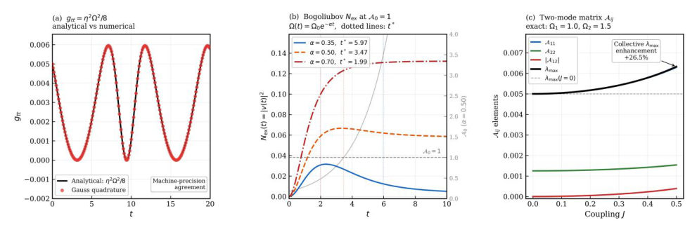
<figcaption class="paper-figure-caption"><b>Fig 1.</b> Figure 1. Numerical verification of the geometric non-adiabaticity framework. (a) Exact verification</figcaption>
</figure>
</div>

<p><strong>Summary.</strong> This paper establishes a universal geometric framework using the normalized Fubini–Study distinguishability speed to quantify non-adiabatic instability in driven quantum systems. It introduces a dimensionless parameter ($\mathcal{A}_n$) that predicts instability onset, connects this to quantum critical phenomena, and proves a self-limitation theorem for nonlinear systems. The theory offers a unified diagnostic tool applicable from superconducting qubits to magnonic resonators.</p>
<p><strong>Why it may be interesting.</strong> This work provides a powerful, unified geometric diagnostic tool ($\mathcal{A}_n$) applicable across diverse quantum platforms (qubits, magnonics) to predict fundamental limits on control speed and stability.</p>
<details>
<summary>Detailed structure</summary>
<p><strong>Main problem.</strong> The paper develops a unified geometric framework to quantify local non-adiabaticity and instability in general driven quantum systems, moving beyond traditional adiabatic theorems.</p>
<p><strong>Main result.</strong> It introduces a universal, gauge-invariant instability parameter ($\mathcal{A}_n$) that governs the onset of non-adiabaticity, and proves a 'Geometric Self-Limitation' theorem for nonlinear systems.</p>
<p><strong>Method.</strong> The framework utilizes the Fubini–Study metric and the Quantum Geometric Tensor (QGT) to define the instability parameter, which is then analyzed in both closed and open quantum system settings.</p>
<p><strong>Model / system.</strong> The theory applies to general driven quantum systems, exemplified by parametric oscillators, coupled bosonic modes, and is extended to open systems using the Bures metric.</p>
<p><strong>Key observables.</strong> Universal instability parameter ($\mathcal{A}_n$), Fubini–Study speed ($v_{FS}$), spectral gap ($\Delta_n$), and the maximum eigenvalue of the instability matrix ($\lambda_{\max}$).</p>
<p><strong>Important parameters / regimes.</strong> The instability threshold ($\mathcal{A}_n \sim 1$), the minimum gate time ($T_{min} = 1/\sqrt{8\omega}$), and the nonlinear regulator strength ($U$).</p>
<p><strong>Assumptions / limitations.</strong> The analysis relies on the assumption that the accessible low-occupancy manifold is compact and that the nonlinear regulator provides a monotonic gap condition for its self-limitation proof.</p>
<p><strong>Figures summary.</strong> The notes reference calculations confirming the relationship between the FS metric and the geometric parameter ($\eta^2\Omega^2/8$), and show how the dominant eigenvalue ($\lambda_{\max}$) increases with inter-mode coupling ($J$).</p>
<p><strong>Paper structure.</strong> The paper builds from defining the general geometric instability criterion ($\mathcal{A}_n$) using the FS speed and spectral gap, demonstrating its equivalence to older parameters, and then extending this to analyze self-limitation via nonlinear regulators and multi-mode coupling.</p>
</details>
<details>
<summary>Abstract</summary>
<p>We develop a unified geometric framework for local non-adiabaticity in driven quantum systems. We show that the previously introduced AMT non adiabaticity parameter arises as a special realization of a more general geometric instability criterion governed by the normalized Fubini Study distinguishability speed. The local geometric evolution speed is identified as the physically relevant quantity controlling the onset of non-adiabatic instability.   We introduce a universal dimensionless instability parameter measuring the competition between quantum-state evolution speed and spectral-gap protection. This quantity provides a local, gauge-invariant, and basis-independent criterion for arbitrary driven Hamiltonians. Near quantum critical points, the instability parameter diverges through inverse gap amplification, recovering the Kibble Zurek freeze-out condition directly from local geometric data.   We prove that monotonic occupation-dependent nonlinear regulators geometrically compress the quantum metric, establishing a self-limitation theorem in which nonlinear spectral deformation confines the accessible region of projective Hilbert space under strong driving. The multimode extension yields a matrix-valued instability criterion that identifies collective instability channels invisible to scalar descriptions.   The framework naturally extends to open quantum systems through the Bures metric and quantum Fisher geometry, where thermal mixing and Lindblad decay increase the instability threshold through geometric suppression of state distinguishability. The instability threshold further implies a universal geometric lower bound on coherent control time and quantum gate duration.</p>
</details>
<p><sub><a href="#top">↑ back to top</a></sub></p>

<p><a id="paper-2606.00286"></a></p>
<h3 id="localization-of-active-particles-on-random-arrays-of-parallel-filaments"><a href="http://arxiv.org/abs/2606.00286v1">Localization of Active Particles on Random Arrays of Parallel Filaments</a></h3>
<p><strong>Authors:</strong> Owen Santoso, Elena Koslover<br>
<strong>Type:</strong> theory · <strong>Category:</strong> disordered systems and neural networks · <strong>PDF:</strong> <a href="https://arxiv.org/pdf/2606.00286v1">https://arxiv.org/pdf/2606.00286v1</a><br>
<strong>Analysis basis:</strong> full PDF text, analyzed in chunks
<strong>Topic relevance:</strong> <code>driven-dissipative phase transition</code> <strong>3/5</strong> · <code>non-equilibrium dynamics</code> <strong>3/5</strong> · <code>non-equilibrium universality</code> <strong>3/5</strong> · <code>Keldysh / 2PI / non-Gaussian methods</code> <strong>2/5</strong> · <code>methods for driven-dissipative</code> <strong>2/5</strong> · <code>Frenkel-Kontorova</code> <strong>1/5</strong> · <code>Kondo &amp; dissipative impurity</code> <strong>1/5</strong> · <code>analog quantum simulation</code> <strong>1/5</strong> · <code>correlated / nonlocal dissipation</code> <strong>1/5</strong></p>
<div class="figure-strip-hint">↔ Scroll figures horizontally</div>
<div class="paper-figures-scroll">
<figure class="paper-figure-card">
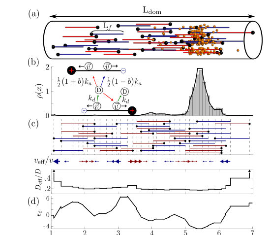
<figcaption class="paper-figure-caption"><b>Fig 1.</b> FIG. 1. (a) Simulation snapshot of biased particles (orange) navigating a parallel filament array, with filament plus ends pointing right (red) or left (blue). Only the axial dimension is resolved in the simulations. (b) Inset: schematic of transitions between motility states. Histogram: steady-state distribution from simulations, Line: analytic distribution from Eq. 3. (c) Region decomposition of the filament array, showing effective velocity (arrows) and diffusivity (black curve) in each region. (d) Energy landscape corresponding to the filament configu- ration. Parameters used: Lf = 1µm, n = 7, Ldom = 7µm, v = 1µm, D = 0.1µm2, ka = kd = 100s−1, b = 1.</figcaption>
</figure>
<figure class="paper-figure-card">
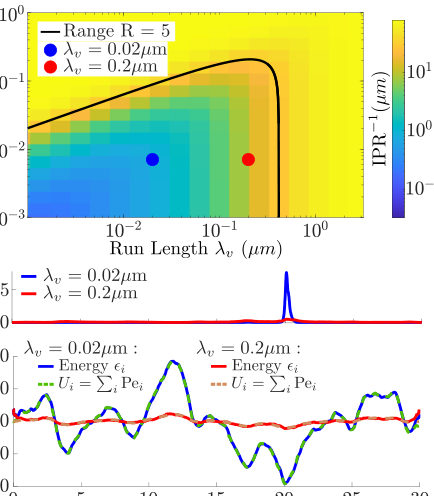
<figcaption class="paper-figure-caption"><b>Fig 2.</b> FIG. 2. (a) Steady-state localization width (IPR−1, color), plotted as a function of diffusive length λD and run length λv. Black curve tracks values where the energy landscape range (Eq. 7) reaches R = 5, marking a transition to tight localization. (b) Steady-state distribution of particles on a sample filament configuration for two different run lengths (λv = 0.02µm, 0.2µm). (c) Energy landscapes (ϵi) corre- sponding to the distributions in (b) are shown in blue and red. The potential function Ui (green and brown) provides a smoothed estimate of the landscape. Parameters used: Lf = 1µm, n = 40, ka = kd = 100s−1, b = 1 and Ldom = 100µm in (c). IPR−1 color plot is averaged over 200...</figcaption>
</figure>
<figure class="paper-figure-card">
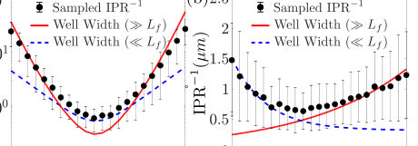
<figcaption class="paper-figure-caption"><b>Fig 3.</b> FIG. 4. Localization width, quantified by IPR−1, is plot- ted versus (a) particle velocity and (b) filament length. Black dots: mean values from 200 configurations, with error bars in- dicating standard deviation. Solid red and dashed blue curves show analytic approximations for the W ≫Lf (Eq. 8) and W ≪Lf (Eq. 9), respectively.</figcaption>
</figure>
<figure class="paper-figure-card">
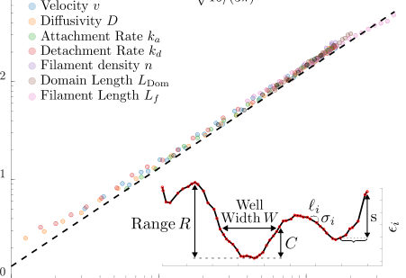
<figcaption class="paper-figure-caption"><b>Fig 4.</b> FIG. 3. Depth of energy landscape collapses to a universal curve as a function of the ratio of length scales λgeom/λkin. Inset illustrates the landscape range R, well width W, and correlated step size s for a truncated energy landscape, with red dots marking region boundaries. Dots show range of the bulk landscape ϵ, averaged over 200 sampled configurations, while kinetic and geometric parameters are varied. Dashed line gives analytic prediction from Eq. 7. Default param- eter values: b = 1, v = 1µm, D = 0.1µ2m/s, ka = kd = 100s−1, n = 40, Ldom = 100µm, Lf = 1µm. Edge regions within distance Lf of the domain boundaries are excluded from the calculation.</figcaption>
</figure>
</div>

<p><strong>Summary.</strong> This work analyzes particle localization on random arrays of filaments, drawing inspiration from biological microtubules. By modeling the system using an advection-diffusion equation, the authors show that particle accumulation (localization) is robust and strongest when the particle's active transport length is intermediate. This highlights how active processes interact with quenched disorder to create stable spatial organization.</p>
<p><strong>Why it may be interesting.</strong> The framework of mapping transport dynamics onto an effective energy landscape due to quenched disorder is highly relevant to understanding energy barriers and trapping mechanisms in complex quantum or classical systems.</p>
<details>
<summary>Detailed structure</summary>
<p><strong>Main problem.</strong> The paper investigates how disordered arrays of filaments govern the distribution of intermittently moving particles that switch between diffusive and processive transport.</p>
<p><strong>Main result.</strong> The system exhibits robust particle localization, which is strongest for intermediate run-lengths, demonstrating emergent spatial organization from the interplay of active transport and quenched disorder.</p>
<p><strong>Method.</strong> The analysis models the system using an advection-diffusion equation derived from the rapid attachment-detachment limit, mapping the steady-state density onto an effective energy landscape.</p>
<p><strong>Model / system.</strong> The physical system is a 1D random array of parallel filaments, motivated by mixed-polarity microtubules in dendrites. Particles switch between passive diffusion and active, biased motion along these fixed filaments.</p>
<p><strong>Key observables.</strong> Localization strength, quantified by the Inverse Participation Ratio (IPR), and the resulting particle density profile $
ho_i(x) \propto e^{-\epsilon_i(x)}$.</p>
<p><strong>Important parameters / regimes.</strong> Diffusivity ($D$), attachment/detachment rates ($k_a, k_d$), bias parameter ($b$), and the particle run-length ($\lambda_v$).</p>
<p><strong>Assumptions / limitations.</strong> The analysis relies on a 'single-layer' approximation, assuming attachment/detachment rates are much faster than filament traversal times, and the system is analyzed in a 1D axial coordinate.</p>
<p><strong>Figures summary.</strong> Figures illustrate simulation snapshots of biased particles, the schematic of motility state transitions, the resulting energy landscape, and plots showing the condition for tight localization based on kinetic parameters.</p>
<p><strong>Paper structure.</strong> The paper first establishes the physical model and the governing advection-diffusion equation. It then derives the effective energy landscape and analyzes the conditions (intermediate run-lengths) under which localization is maximized, providing quantitative diagnostics like the IPR.</p>
</details>
<details>
<summary>Abstract</summary>
<p>Quenched disorder in the environment can fundamentally alter transport dynamics in both active and passive systems. We explore how disordered arrays of filaments govern the distribution of intermittently moving particles which switch between diffusive and processive transport. Motivated by the mixed-polarity arrangements of parallel microtubules observed in mammalian dendrites, we show that such arrays tend to result in localization of particles at regions of convergent filament orientation. In the rapid attachment-detachment limit, the disordered system can be described by a noisy one-dimensional effective energy landscape, whose structure is approximated by a random walk. The depth and width of wells on this landscape are expressed as a function of the transport kinetics and system geometry. Localization is shown to be strongest at intermediate run-lengths, where biased transport persists long enough to sense the quenched filament polarity but not so long as to facilitate escape from local traps. These results demonstrate robust localization of particles moving on random filament networks, highlighting the emergent spatial organization that arises from an interplay of active transport and quenched disorder.</p>
</details>
<p><sub><a href="#top">↑ back to top</a></sub></p>

<p><a id="paper-2606.01835"></a></p>
<h3 id="noise-spectroscopy-of-two-body-loss-as-a-probe-of-dynamical-bulk-viscosity-in-ultracold-atomic-gases"><a href="http://arxiv.org/abs/2606.01835v1">Noise spectroscopy of two-body loss as a probe of dynamical bulk viscosity in ultracold atomic gases</a></h3>
<p><strong>Authors:</strong> Tingyu Zhang, Hiroyuki Tajima, Takeo Kato<br>
<strong>Type:</strong> theory · <strong>Category:</strong> quantum gases · <strong>PDF:</strong> <a href="https://arxiv.org/pdf/2606.01835v1">https://arxiv.org/pdf/2606.01835v1</a><br>
<strong>Analysis basis:</strong> full PDF text, analyzed in chunks
<strong>Topic relevance:</strong> <code>correlated / nonlocal dissipation</code> <strong>3/5</strong> · <code>methods for driven-dissipative</code> <strong>3/5</strong> · <code>Keldysh / 2PI / non-Gaussian methods</code> <strong>2/5</strong> · <code>analog quantum simulation</code> <strong>2/5</strong> · <code>driven-dissipative phase transition</code> <strong>2/5</strong> · <code>non-equilibrium dynamics</code> <strong>2/5</strong> · <code>non-equilibrium universality</code> <strong>2/5</strong> · <code>quantum measurements</code> <strong>1/5</strong></p>
<div class="figure-strip-hint">↔ Scroll figures horizontally</div>
<div class="paper-figures-scroll">
<figure class="paper-figure-card">
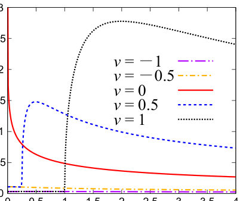
<figcaption class="paper-figure-caption"><b>Fig 1.</b> FIG. 1. Dimensionless noise power spectrum of the two-body loss current obtained from the second-order virial expansion with different values of v.</figcaption>
</figure>
<figure class="paper-figure-card">
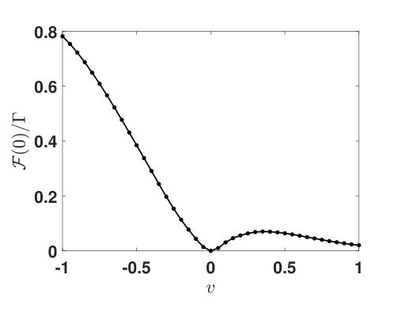
<figcaption class="paper-figure-caption"><b>Fig 2.</b> FIG. 2. Fano factor for correlated noise of pure two-body noise in DC limit as a function of v. Γ is a dimensionless normalizing factor given by Eq. (38). F(0) becomes zero at the unitary limit where v = 0, due to scale invariance. Its value becomes small at large positive v, namely, the system is in BEC regime.</figcaption>
</figure>
</div>

<p><strong>Summary.</strong> This paper proposes using the correlated noise generated by two-body particle loss in ultracold atomic gases to measure the dynamical bulk viscosity. By analyzing the noise power spectrum beyond the simple shot-noise background, the authors demonstrate a direct theoretical link between this measurable fluctuation and the bulk viscosity coefficient. This offers a powerful new experimental avenue for studying transport phenomena in quantum fluids.</p>
<p><strong>Why it may be interesting.</strong> This work provides a novel, measurable diagnostic tool—noise spectroscopy—to probe a fundamental, but experimentally elusive, transport property (bulk viscosity) in quantum gases.</p>
<details>
<summary>Detailed structure</summary>
<p><strong>Main problem.</strong> The research aims to establish a measurable link between the correlated noise spectrum of two-body particle loss and the dynamical bulk viscosity in weakly dissipative quantum gases.</p>
<p><strong>Main result.</strong> The noise power spectrum of the two-body loss current is found to be directly proportional to the equilibrium correlation function of the contact operator, which in turn is related to the dynamical bulk viscosity via the Kubo formula.</p>
<p><strong>Method.</strong> The authors derive the loss-current operator from the Lindblad equation and calculate the noise power spectrum, subtracting the Poissonian background to isolate the transport-sensitive terms.</p>
<p><strong>Model / system.</strong> The system modeled is a two-component Fermi gas (ultracold atomic gas) undergoing weak inelastic two-body losses. The dynamics are governed by a Lindblad master equation, incorporating contact interactions.</p>
<p><strong>Key observables.</strong> Loss-Current Noise Power Spectrum ($S_N$), Fano Factor ($F(\omega)$), and the dynamical bulk viscosity ($\zeta(\omega)$).</p>
<p><strong>Important parameters / regimes.</strong> Weak-loss regime, unitarity, and the scattering length parameter ($v$).</p>
<p><strong>Assumptions / limitations.</strong> The analysis relies on the Lindblad equation for weak losses and utilizes the Kubo formula to connect noise fluctuations to transport coefficients.</p>
<p><strong>Figures summary.</strong> Figure 1 shows the dimensionless noise power spectrum dependence on the scattering length parameter, and Figure 2 illustrates the Fano factor vanishing at unitarity.</p>
<p><strong>Paper structure.</strong> The paper proceeds by deriving the loss-current operator, calculating the noise correlator, and then establishing the proportionality between this noise spectrum and the retarded contact correlator, which is linked to the bulk viscosity via the Kubo formula.</p>
</details>
<details>
<summary>Abstract</summary>
<p>We show that the correlated noise of the two-body loss current provides access to the dynamical bulk viscosity in weakly dissipative quantum gases. Starting from the Lindblad equation for weak inelastic losses, we derive the loss-current operator. After subtracting the leading Poissonian shot-noise background, the remaining noise power spectrum of two-body loss current is found proportional to the equilibrium correlation function of the contact operator. Combining this result with the exact relation between contact correlations and bulk viscosity, we demonstrate the correspondence between the measurable loss-current noise and the bulk-viscosity. Our result identifies the higher-order fluctuation of two-body loss as a probe of dynamical bulk viscosity, whose measurement has remained elusive in experiments.</p>
</details>
<p><sub><a href="#top">↑ back to top</a></sub></p>

<p><a id="paper-2606.00749"></a></p>
<h3 id="quantum-ergodicity-and-thermalization-in-interval-quantum-mechanics"><a href="http://arxiv.org/abs/2606.00749v1">Quantum Ergodicity and Thermalization in Interval Quantum Mechanics</a></h3>
<p><strong>Authors:</strong> Abbas Edalat<br>
<strong>Type:</strong> theory · <strong>Category:</strong> statistical mechanics · <strong>PDF:</strong> <a href="https://arxiv.org/pdf/2606.00749v1">https://arxiv.org/pdf/2606.00749v1</a><br>
<strong>Analysis basis:</strong> full PDF text, analyzed in chunks
<strong>Topic relevance:</strong> <code>non-equilibrium dynamics</code> <strong>3/5</strong> · <code>measurement-induced transitions</code> <strong>2/5</strong> · <code>methods for driven-dissipative</code> <strong>2/5</strong> · <code>quantum measurements</code> <strong>2/5</strong> · <code>scars &amp; prethermalization</code> <strong>2/5</strong> · <code>Keldysh / 2PI / non-Gaussian methods</code> <strong>1/5</strong> · <code>analog quantum simulation</code> <strong>1/5</strong> · <code>correlated / nonlocal dissipation</code> <strong>1/5</strong> · <code>driven-dissipative phase transition</code> <strong>1/5</strong> · <code>entanglement &amp; information structure</code> <strong>1/5</strong> · <code>non-equilibrium universality</code> <strong>1/5</strong></p>
<div class="figure-strip-hint">↔ Scroll figures horizontally</div>
<div class="paper-figures-scroll">
<figure class="paper-figure-card">
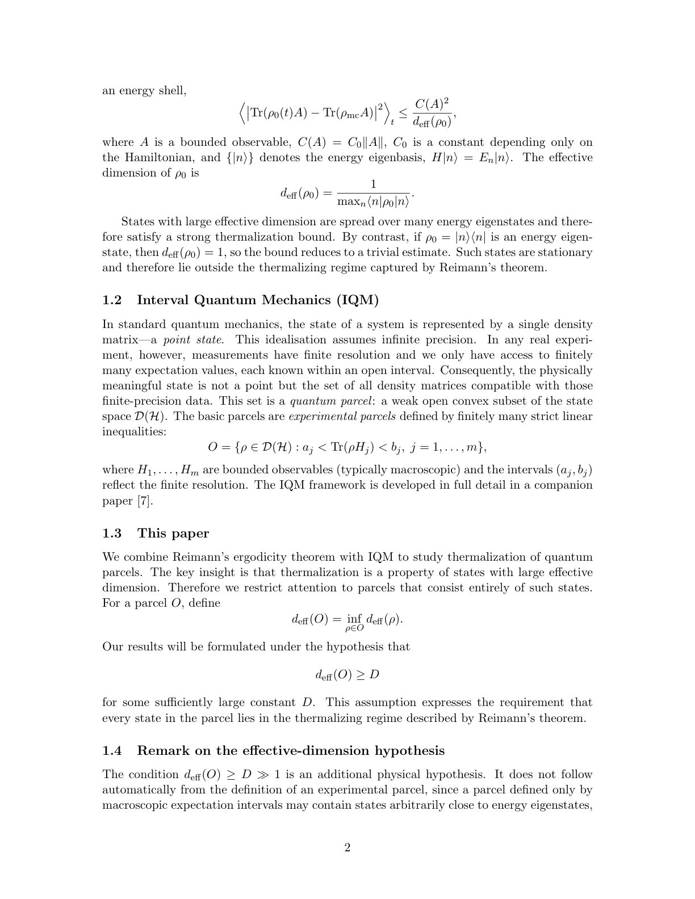
<figcaption class="paper-figure-caption"><b>Fig 1.</b> Low-resolution page preview, page 2</figcaption>
</figure>
<figure class="paper-figure-card">
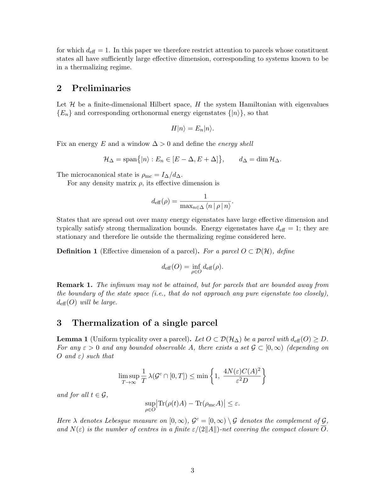
<figcaption class="paper-figure-caption"><b>Fig 2.</b> Low-resolution page preview, page 3</figcaption>
</figure>
<figure class="paper-figure-card">
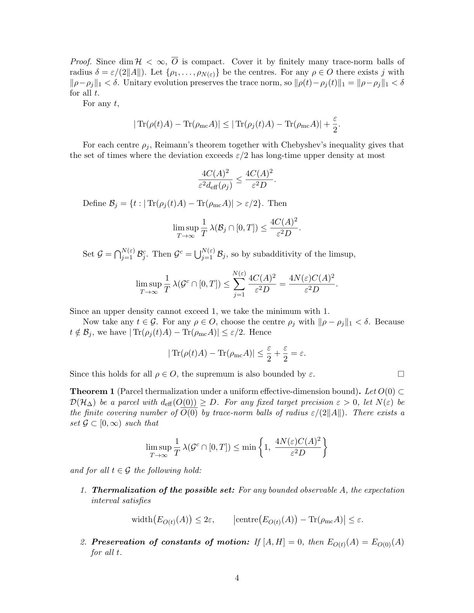
<figcaption class="paper-figure-caption"><b>Fig 3.</b> Low-resolution page preview, page 4</figcaption>
</figure>
<figure class="paper-figure-card">
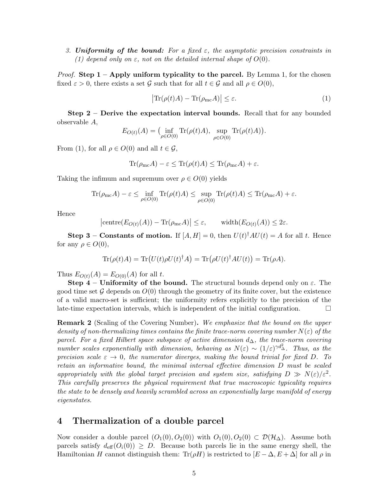
<figcaption class="paper-figure-caption"><b>Fig 4.</b> Low-resolution page preview, page 5</figcaption>
</figure>
<figure class="paper-figure-card">
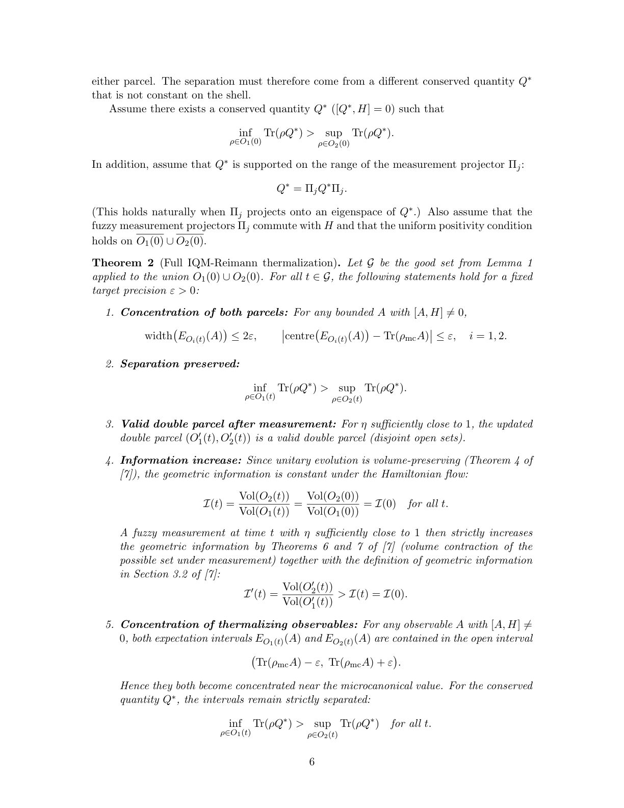
<figcaption class="paper-figure-caption"><b>Fig 5.</b> Low-resolution page preview, page 6</figcaption>
</figure>
</div>

<p><strong>Summary.</strong> This paper develops a framework using Interval Quantum Mechanics (IQM) to analyze quantum thermalization. It shows that when the system's knowledge is represented by a 'quantum parcel,' the expectation values of observables converge to microcanonical values, provided the parcel has sufficient effective dimension. The method is particularly strong for tracking multiple, separated components of the state simultaneously.</p>
<p><strong>Why it may be interesting.</strong> This work provides a powerful, geometrically rigorous tool for studying thermalization in open or partially known quantum systems, moving beyond point-state assumptions common in standard quantum dynamics.</p>
<details>
<summary>Detailed structure</summary>
<p><strong>Main problem.</strong> The paper combines quantum ergodicity theorems with Interval Quantum Mechanics (IQM) to rigorously study how quantum states, represented by epistemic 'quantum parcels,' approach thermal equilibrium.</p>
<p><strong>Main result.</strong> It proves that for parcels with sufficient effective dimension, the expectation values of observables concentrate around the microcanonical ensemble values for late times, and this concentration is preserved even when tracking separated state components.</p>
<p><strong>Method.</strong> The analysis uses Reimann's spectral typicality theorem within the IQM framework, treating quantum states as convex sets defined by measurement intervals.</p>
<p><strong>Model / system.</strong> The system is a general quantum mechanical system governed by a Hamiltonian H. The state is not a point but a 'quantum parcel' ($\mathcal{O}$), which is a weak open convex set of density matrices reflecting finite-precision measurement knowledge.</p>
<p><strong>Key observables.</strong> Expectation intervals of observables, effective dimension ($   ext{deff}$), and the separation maintained by a conserved quantity $Q^*$.</p>
<p><strong>Important parameters / regimes.</strong> The minimal effective dimension $D$ (required to ensure thermalization) and the time $t$ (late times).</p>
<p><strong>Assumptions / limitations.</strong> The analysis requires the initial state parcel to have a large effective dimension ($    ext{deff} \geq D \gg 1$) to ensure the system is in the thermalizing regime.</p>
<p><strong>Paper structure.</strong> The paper builds from establishing the general framework of IQM for quantum states, applying Reimann's theorem to show single-parcel thermalization, and culminating in the proof for double parcels, which maintains both thermalization and separation under evolution.</p>
</details>
<details>
<summary>Abstract</summary>
<p>We combine Reimann's spectral typicality theorem -- a modern formulation of quantum ergodicity -- with the framework of Interval Quantum Mechanics (IQM). In IQM, quantum states are represented not by points but by \emph{quantum parcels}: weak open convex sets of density matrices defined by finitely many expectation intervals. Such parcels are the exact mathematical representation of the epistemic knowledge obtained from finite-precision measurements of macroscopic observables.   We prove that for a single parcel in which every state has large effective dimension (a condition that ensures thermalization), the expectation interval of any bounded observable becomes concentrated around the microcanonical value for most late times. The asymptotic bound depends only on the minimal effective dimension within the parcel, not on its detailed shape.   For a double parcel \((O_1,O_2)\) with both components contained in an energy shell, separated by a conserved quantity \(Q^*\) that is supported on the range of the measurement projector, we show that the expectation intervals of both parcels become concentrated near the microcanonical values of bounded observables, the separation is preserved exactly, and the updated double parcel after a fuzzy measurement remains valid.</p>
</details>
<p><sub><a href="#top">↑ back to top</a></sub></p>

<p><a id="paper-2606.00698"></a></p>
<h3 id="wasserstein-2-gradient-flows-and-the-geometry-of-entropy-production-in-classical-and-quantum-stochastic-thermodynamics"><a href="http://arxiv.org/abs/2606.00698v1">Wasserstein-2 gradient flows and the geometry of entropy production in classical and quantum stochastic thermodynamics</a></h3>
<p><strong>Authors:</strong> Olga Movilla Miangolarra, Ralph Sabbagh, Artemy Kolchinsky<br>
<strong>Type:</strong> theory · <strong>Category:</strong> statistical mechanics · <strong>PDF:</strong> <a href="https://arxiv.org/pdf/2606.00698v1">https://arxiv.org/pdf/2606.00698v1</a><br>
<strong>Analysis basis:</strong> full PDF text, analyzed in chunks
<strong>Topic relevance:</strong> <code>driven-dissipative phase transition</code> <strong>3/5</strong> · <code>non-equilibrium dynamics</code> <strong>3/5</strong> · <code>non-equilibrium universality</code> <strong>3/5</strong> · <code>Keldysh / 2PI / non-Gaussian methods</code> <strong>2/5</strong> · <code>correlated / nonlocal dissipation</code> <strong>2/5</strong> · <code>entanglement &amp; information structure</code> <strong>2/5</strong> · <code>methods for driven-dissipative</code> <strong>2/5</strong></p>
<div class="figure-strip-hint">↔ Scroll figures horizontally</div>
<div class="paper-figures-scroll">
<figure class="paper-figure-card">
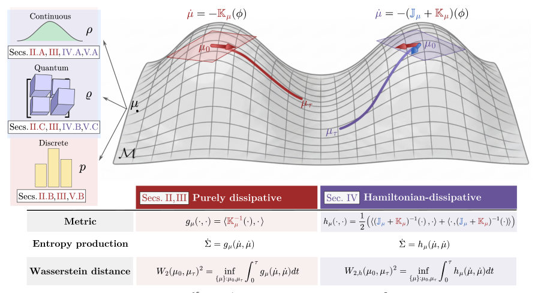
<figcaption class="paper-figure-caption"><b>Fig 1.</b> FIG. 1. Summary of the Wasserstein-2 geometric picture of stochastic and quantum thermodynamics in purely dissipative (left) and mixed Hamiltonian-dissipative (right) systems. The Wasserstein-2 geometry arises from a gradient flow structure in purely dissipative systems (continuous, discrete, and quantum), and from a combination of gradient and Hamiltonian flows in mixed systems (continuous and quantum). In all cases, the distance squared bounds entropy production in finite-time transitions.</figcaption>
</figure>
<figure class="paper-figure-card">
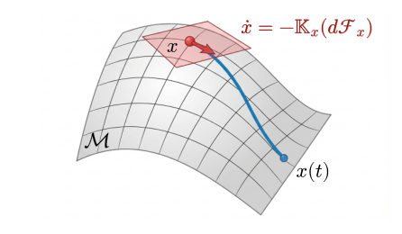
<figcaption class="paper-figure-caption"><b>Fig 2.</b> FIG. 2. The state x evolves on the Riemannian manifold (M, g) along the gradient flow of the free energy F.</figcaption>
</figure>
<figure class="paper-figure-card">
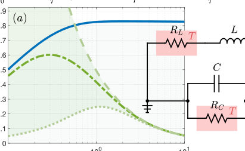
<figcaption class="paper-figure-caption"><b>Fig 3.</b> FIG. 3. (a) Entropy produced with the constant Hamilto- nian, ∫ τ 0 ˙Σdt, and with the optimal quadratic Hamiltonian, W G 2,h(ρ0, ργ τ)2/τ, between endpoints ρ0, ργ τ , as a function of the friction coefficient γ = RL = 1/RC. The shaded area il- lustrates the upper and lower bounds in terms of the purely dissipative metric. Constants τ, T, C, and L are set to 1. (b) RLC circuit with resistors at temperature T.</figcaption>
</figure>
<figure class="paper-figure-card">
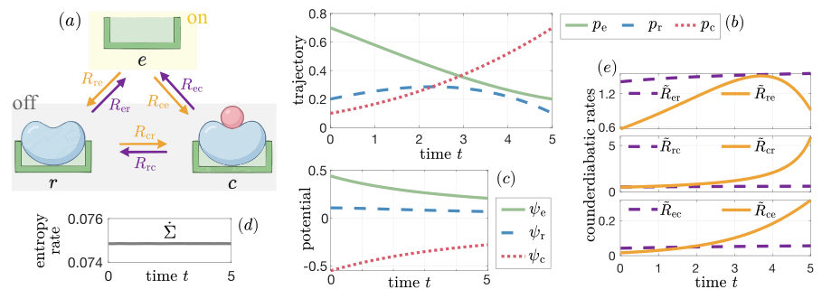
<figcaption class="paper-figure-caption"><b>Fig 4.</b> FIG. 4. Minimum entropy counterdiabatic switching for gene regulation. (a) Illustration of the discrete Markov process, the operator site is depicted in green, the repressor in blue, and the corepressor in red. Portrayal of (b) optimal trajectories, (c) optimal potentials, (d) resulting entropy production rate, and (e) detailed-balanced counterdiabatic rates that realize the optimal trajectory in finite time. We have set τ = 5 and T = 1.</figcaption>
</figure>
<figure class="paper-figure-card">
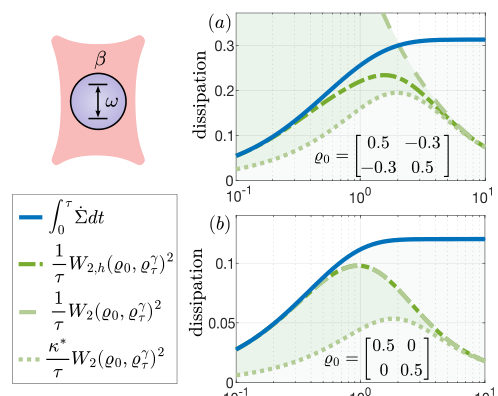
<figcaption class="paper-figure-caption"><b>Fig 5.</b> FIG. 5. Comparison between entropy produced and the de- rived bounds for different values of the decay rate γ; β, ω, τ are set to 1. (a) The initial state is not diagonal, and the Hamiltonian term plays a role. (b) The initial state is diago- nal, and the Hamiltonian term plays no role in the dynamics.</figcaption>
</figure>
</div>

<p><strong>Summary.</strong> This paper unifies the geometric understanding of entropy production in classical and quantum thermodynamics using Wasserstein-2 metrics derived from free energy gradient flows. It shows that these metrics provide finite-time refinements to the second law and rigorously connects optimal transport theory to fundamental thermodynamic quantities like thermodynamic length. The framework extends beyond simple dissipation to incorporate coherent (Hamiltonian) dynamics.</p>
<p><strong>Why it may be interesting.</strong> This work provides a powerful geometric lens (optimal transport) to analyze non-equilibrium processes in quantum and classical systems, offering quantitative bounds on irreversible processes beyond the standard second law.</p>
<details>
<summary>Detailed structure</summary>
<p><strong>Main problem.</strong> To provide a unified geometric description of entropy production in classical and quantum stochastic thermodynamics, extending the second law beyond purely dissipative dynamics.</p>
<p><strong>Main result.</strong> The framework establishes that the Wasserstein-2 distance bounds entropy production, offering a finite-time refinement of the second law, and connects optimal transport to thermodynamic length.</p>
<p><strong>Method.</strong> The authors utilize Wasserstein-2 structures arising from gradient flows of free energy, formulating relaxation dynamics for continuous, discrete, and quantum systems.</p>
<p><strong>Model / system.</strong> The work covers classical overdamped diffusions, discrete Markov chains, and open quantum systems evolving under Lindblad dynamics. The geometry is defined on the space of states (probability distributions or density matrices).</p>
<p><strong>Key observables.</strong> Entropy production, Free energy functional, Wasserstein-2 distance, Thermodynamic length.</p>
<p><strong>Important parameters / regimes.</strong> Dissipative mobilities, Hamiltonian coupling strength ($\gamma$), Time ($    au$), Temperature ($eta$).</p>
<p><strong>Assumptions / limitations.</strong> The analysis often assumes the existence of a smooth manifold of states and relies on establishing equivalence bounds between different geometric formulations (e.g., Hamiltonian-dissipative vs. purely dissipative).</p>
<p><strong>Figures summary.</strong> Figure 1 summarizes the Wasserstein-2 geometric picture for purely dissipative and mixed Hamiltonian-dissipative systems. Figure 2 illustrates the gradient flow of the free energy functional on the state space.</p>
<p><strong>Paper structure.</strong> The paper systematically reviews the gradient flow formulation across continuous, discrete, and quantum settings, deriving the associated Wasserstein-2 metrics. It then establishes bounds relating entropy production to these geometric distances, culminating in the recovery of thermodynamic length at equilibrium.</p>
</details>
<details>
<summary>Abstract</summary>
<p>The second law does more than set the direction of thermodynamic evolution: it endows nonequilibrium transformations with an underlying geometry. In this work, we provide a unified geometric description of entropy production in classical and quantum thermodynamics based on Wasserstein-2 structures arising from gradient flows of free energy. We review how relaxation to equilibrium, in overdamped diffusions, discrete detailed-balanced Markov chains, and dissipative Lindblad dynamics, can be formulated as a gradient flow on the space of states. The associated Wasserstein-2 distance bounds entropy production, yielding a finite-time refinement of the second law. We extend this framework beyond purely dissipative dynamics by introducing generalized Wasserstein-2 metrics that incorporate conservative (Hamiltonian) dynamics in both classical inertial systems and open quantum systems, yielding intrinsic distances that exactly characterize minimal entropy production under fixed dissipative mobilities. We establish equivalence bounds between purely dissipative and Hamiltonian-dissipative geometries, explicitly quantifying how inertial or coherent dynamics can reduce dissipation. Finally, when restricted to equilibrium distributions, we recover the thermodynamic length of linear response-including the quantum thermodynamic length-thereby linking optimal transport, thermodynamic length, and counterdiabatic protocols within a single geometric framework. All in all, our results extend the Riemannian program of thermodynamics further from equilibrium and provide a geometric foundation for optimal protocols beyond the overdamped setting.</p>
</details>
<p><sub><a href="#top">↑ back to top</a></sub></p>

<p><a id="paper-2606.01752"></a></p>
<h3 id="stress-relaxation-in-fiber-networks-via-force-dependent-stochastic-severing"><a href="http://arxiv.org/abs/2606.01752v1">Stress relaxation in fiber networks via force-dependent stochastic severing</a></h3>
<p><strong>Authors:</strong> Prathamesh Kulkarni, Anatoly B. Kolomeisky, Fred C. MacKintosh<br>
<strong>Type:</strong> theory · <strong>Category:</strong> statistical mechanics · <strong>PDF:</strong> <a href="https://arxiv.org/pdf/2606.01752v1">https://arxiv.org/pdf/2606.01752v1</a><br>
<strong>Analysis basis:</strong> full PDF text, analyzed in chunks
<strong>Topic relevance:</strong> <code>driven-dissipative phase transition</code> <strong>3/5</strong> · <code>non-equilibrium universality</code> <strong>3/5</strong> · <code>analog quantum simulation</code> <strong>2/5</strong> · <code>methods for driven-dissipative</code> <strong>2/5</strong> · <code>non-equilibrium dynamics</code> <strong>2/5</strong> · <code>Frenkel-Kontorova</code> <strong>1/5</strong> · <code>Keldysh / 2PI / non-Gaussian methods</code> <strong>1/5</strong> · <code>correlated / nonlocal dissipation</code> <strong>1/5</strong> · <code>entanglement &amp; information structure</code> <strong>1/5</strong></p>
<div class="figure-strip-hint">↔ Scroll figures horizontally</div>
<div class="paper-figures-scroll">
<figure class="paper-figure-card">
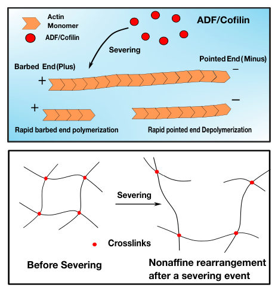
<figcaption class="paper-figure-caption"><b>Fig 1.</b> FIG. 1: The first panel of the schematic demonstrates severing via cofilin in an actin filament. Severing occurs when cofilin binds to an actin filament, resulting in fila- ments with free barbed (plus) and pointed (minus) ends. These filaments can undergo rapid polymerization (at the barbed end) and depolymerization (at the pointed end) in the presence of ATP/ADP, depending on local actin monomer concentration. The second panel shows a sev- ering event in the context of an actin network. Fragmen- tation results in dangling ends and nonaffine structural rearrangement due to relaxation.</figcaption>
</figure>
<figure class="paper-figure-card">
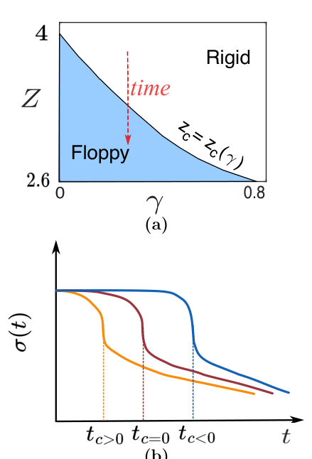
<figcaption class="paper-figure-caption"><b>Fig 2.</b> FIG. 2: (a) Diagram showing the mechanical phase tran- sition in fiber networks. Networks with central force in- teractions undergo a mechanical phase transition con- trolled by the applied shear strain γ and average connec- tivity z. In the absence of bending interactions, networks with a given connectivity z remain floppy when held un- der low applied shear strains and are rigid when held un- der high values of applied shear strains. With increasing applied strain, these networks exhibit a transition from a floppy to a rigid phase, and the transition, being critical in nature, can be depicted using the zc = zc(γ) curve in the figure. The mechanical transition is observed in the presence...</figcaption>
</figure>
<figure class="paper-figure-card">
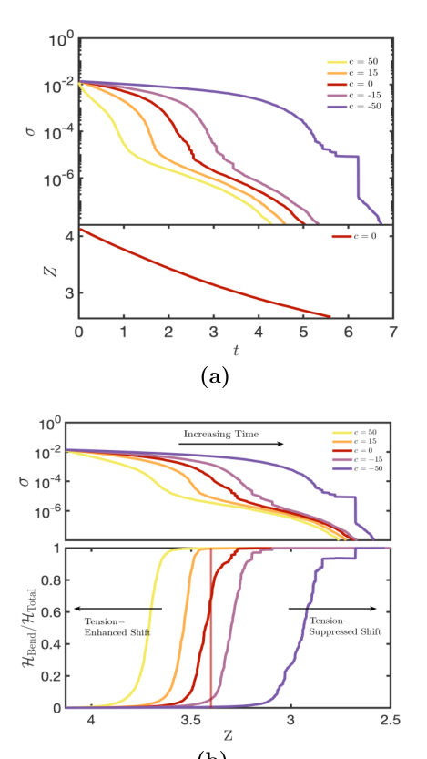
<figcaption class="paper-figure-caption"><b>Fig 3.</b> FIG. 3: (a) Stress relaxation σ and Average connectivity z as a function of time t for varying values of the ten- sion feedback parameter (positive, negative, and zero). (b) Variation of Stress σ and ratio of Bending energy HBend to Total energy HTotal with Connectivity z for the networks. The networks have a dimensionless bending rigidity of ˜κ = 10−5 and are held under an applied shear strain γ = 0.2. From Fig. 3a, it can be observed that connectivity z decreases with time due to the occurrence of severing events. For better physical understanding, stress σ can be analyzed with connectivity z, as shown in Fig. 3b, for the same networks. Connectivity z is plot- ted on the horizontal axis...</figcaption>
</figure>
<figure class="paper-figure-card">
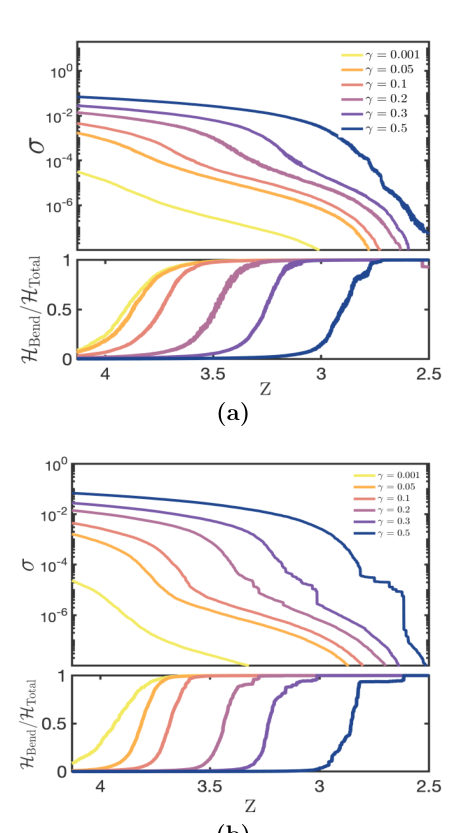
<figcaption class="paper-figure-caption"><b>Fig 4.</b> FIG. 4: Absence of feedback (c = 0): Stress σ and ra- tio of Bending energy HBend to Total energy HTotal with Connectivity z for the networks as a function of con- nectivity z for varying applied strain γ. Fig 4a and 4b correspond to behavior of networks with dimensionless bending rigidity of ˜κ = 10−4 and 10−5 respectively with no feedback present. Bending rigidity clearly affects the behavior near the phase transition, with higher bending rigidity making it more gradual. This is in agreement with fiber network behavior.</figcaption>
</figure>
<figure class="paper-figure-card">
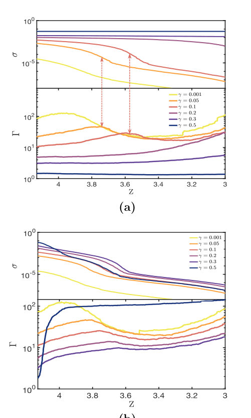
<figcaption class="paper-figure-caption"><b>Fig 5.</b> FIG. 5: Presence of Feedback: Stress σ and Nonaffinity Γ with connectivity z for the networks for varying applied strain γ. The top and bottom panels correspond to the behavior of networks with tension feedback parameter values of c = −50 and c = 50, respectively. For smaller strains, the behavior is similar to when the feedback is ab- sent. In the presence of moderately high strains, a clear shift in the transition can be observed in both tension- suppressed (c = −50) and tension-enhanced (c = 50) severing cases. The “shift” in the transition is depen- dent on the applied strain. The dramatic stress-drop aligns with a peak in Nonaffinity indicating the transi- tion into bending-dominated...</figcaption>
</figure>
</div>

<p><strong>Summary.</strong> This paper models stress relaxation in biological fiber networks subjected to random fiber severing whose rate depends on the local tension. By simulating different feedback mechanisms, the authors show that tuning this mechanochemical feedback can significantly alter the network's mechanical stability, shifting the critical point where the structure loses its rigidity. This provides insight into how biological systems might actively regulate their mechanical properties.</p>
<p><strong>Why it may be interesting.</strong> While focused on classical mechanics, the concept of non-equilibrium phase transitions, critical points, and the influence of local feedback mechanisms on macroscopic stability echoes principles found in open quantum systems and non-equilibrium statistical mechanics.</p>
<details>
<summary>Detailed structure</summary>
<p><strong>Main problem.</strong> The study investigates how stress relaxation occurs in fiber networks when the severing of fibers is stochastically dependent on the local mechanical stress.</p>
<p><strong>Main result.</strong> The mechanochemical feedback mechanism significantly shifts the critical connectivity required for the network to maintain rigidity, delaying or accelerating the loss of mechanical integrity depending on whether severing is tension-suppressed or enhanced.</p>
<p><strong>Method.</strong> The authors developed and employed a computational model using 2D triangular lattice simulations and an event-driven simulation approach (Gillespie algorithm) to track stress and connectivity changes over time.</p>
<p><strong>Model / system.</strong> The system models fiber networks (like those in biological tissues) as spring networks subjected to applied shear strain. The model incorporates both stretching and bending energies, and the severing rate is governed by a feedback parameter ($c$) related to local tension.</p>
<p><strong>Key observables.</strong> Stress relaxation ($\sigma(t)$), network connectivity ($Z(t)$), and the onset of the mechanical rigidity transition.</p>
<p><strong>Important parameters / regimes.</strong> Applied shear strain ($\gamma$), network connectivity ($z$), and the feedback parameter ($c$) which defines tension-suppressed ($c<0$) or tension-enhanced ($c>0$) severing.</p>
<p><strong>Assumptions / limitations.</strong> The analysis assumes fast fragmentation and relaxation timescales compared to the severing timescale, and the model simplifies by ignoring polymerization/depolymerization reactions.</p>
<p><strong>Figures summary.</strong> Figures illustrate the mechanical phase transition ($\gamma$ vs. $z$) and stress vs. time curves for different feedback limits, showing the shift in the critical transition point.</p>
<p><strong>Paper structure.</strong> The paper establishes the physical model, develops the computational framework incorporating force-dependent severing, analyzes the stress relaxation dynamics under different feedback regimes, and concludes by discussing the implications for designing mechanically robust systems.</p>
</details>
<details>
<summary>Abstract</summary>
<p>Fiber networks contribute to the mechanical stability of various biological systems, from cells to tissues. Such systems have been modeled by networks of springs or fibers that exhibit rigidity transitions as a function of either connectivity or applied strain. For a fiber network under constant applied strain, severing can reduce the connectivity and destabilize an initially rigid structure. Here, we investigate stress relaxation in spring and fiber networks in the presence of stochastic, force-dependent severing. A computational model to predict stress relaxation with mechanochemical feedback of stress on severing is developed. We also examine the effects of severing on the network topology and onset of rigidity transition. Using 2D triangular lattice-based computer simulations, we explore different limits of the feedback and demonstrate the shift in the onset of rigidity depending on the limit. The limit of tension-suppressed severing delays stress relaxation and shifts the transition into the bending-dominated regime to lower-than-expected connectivity. In contrast, tension-enhanced severing accelerates relaxation and shifts the transition to higher-than-expected connectivity. It is also found that the magnitude of this shift depends on the applied shear strain and the strength of the feedback. Our theoretical approach clarifies some microscopic aspects of these phenomena. Understanding the impact of such feedback mechanisms can provide valuable insights into designing systems by tuning the feedback to the desired response.</p>
</details>
<p><sub><a href="#top">↑ back to top</a></sub></p>

<p><a id="paper-2606.01439"></a></p>
<h3 id="chirality-free-photon-routing-via-giant-atoms-in-waveguide-qed-ladders"><a href="http://arxiv.org/abs/2606.01439v1">Chirality-free photon routing via giant atoms in waveguide QED ladders</a></h3>
<p><strong>Authors:</strong> Glenn Ochsner, Vincent Schena, Arushi Deb, Imran M. Mirza<br>
<strong>Type:</strong> theory · <strong>Category:</strong> other · <strong>PDF:</strong> <a href="https://arxiv.org/pdf/2606.01439v1">https://arxiv.org/pdf/2606.01439v1</a><br>
<strong>Analysis basis:</strong> full PDF text, analyzed in chunks
<strong>Topic relevance:</strong> <code>analog quantum simulation</code> <strong>3/5</strong> · <code>Tavis-Cummings &amp; cavity-many-emitter</code> <strong>2/5</strong> · <code>correlated cavity matter</code> <strong>2/5</strong> · <code>methods for driven-dissipative</code> <strong>2/5</strong> · <code>Keldysh / 2PI / non-Gaussian methods</code> <strong>1/5</strong> · <code>correlated / nonlocal dissipation</code> <strong>1/5</strong> · <code>driven-dissipative phase transition</code> <strong>1/5</strong> · <code>entanglement &amp; information structure</code> <strong>1/5</strong> · <code>interference shaping light</code> <strong>1/5</strong> · <code>non-equilibrium dynamics</code> <strong>1/5</strong></p>
<div class="figure-strip-hint">↔ Scroll figures horizontally</div>
<div class="paper-figures-scroll">
<figure class="paper-figure-card">
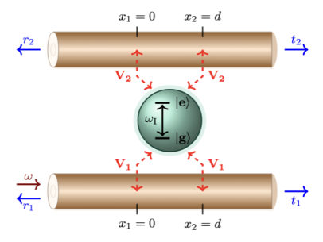
<figcaption class="paper-figure-caption"><b>Fig 1.</b> FIG. 1: (Color online) Single photon router using a single giant atom, coupled to each waveguide at x1 = 0 and x2 = d. The photon enters the setup from the bottom left.</figcaption>
</figure>
<figure class="paper-figure-card">
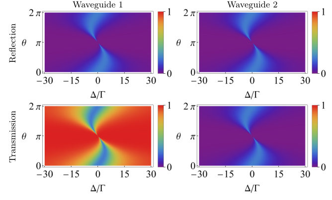
<figcaption class="paper-figure-caption"><b>Fig 2.</b> FIG. 2: (Color online) Photon transmission and reflection probabilities in waveguides 1 and 2 for a single giant atom. Detuning ∆is varied from −30 to +30 in units of the atom-waveguide coupling rate Γ. The phase θ, which incorporates the separation d between coupling points, is varied from 0 to 2π.</figcaption>
</figure>
<figure class="paper-figure-card">
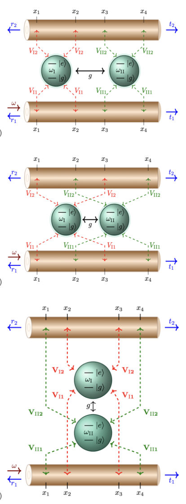
<figcaption class="paper-figure-caption"><b>Fig 3.</b> FIG. 3: (Color online) A single photon router using two giant atoms, coupled to a top and bottom waveguide at points x1, x2, x3, and x4 with coupling strength parameters VI1, VI2, VII1, and VII2 in a (a) fully separated, (b) simply braided, and (c) fully nested configuration.</figcaption>
</figure>
<figure class="paper-figure-card">
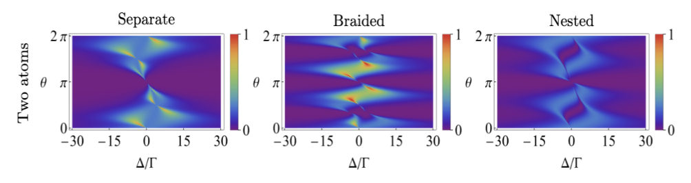
<figcaption class="paper-figure-caption"><b>Fig 4.</b> FIG. 4: (Color online) The routing efficiency |t2|2 as a function of the normalized detuning ∆/Γ and the accumulated phase θ, assuming identical atoms (∆I = ∆II = ∆), uniform decay rates (Γpql = Γ), and vanishing direct coupling (g/Γ = 0). For the separate and nested configurations, the coupling points are equally spaced such that the phase accumulation between any two adjacent coupling points is given by θ. For the braided configuration, the phase accumulation is non-uniform, satisfying 2θ = k(x2 −x1) = k(x4 −x3) and θ = k(x3 −x2).</figcaption>
</figure>
<figure class="paper-figure-card">
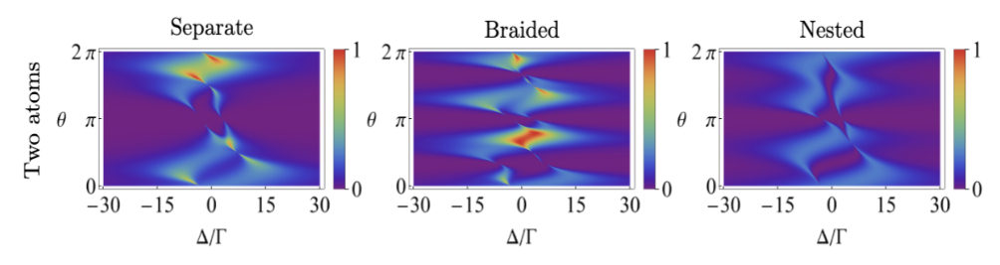
<figcaption class="paper-figure-caption"><b>Fig 5.</b> FIG. 5: (Color online) Routing efficiency |t2|2 is shown as a function of normalized detuning ∆/Γ and accumulated phase θ for a non-zero direct interaction strength g/Γ = 3. All other parameters and coupling configurations are identical to those in Fig. 4.</figcaption>
</figure>
</div>

<p><strong>Summary.</strong> This paper theoretically investigates single-photon routing in quantum electrodynamics ladders built with arrays of giant atoms. By analyzing different atomic arrangements—separated, braided, and nested—the authors demonstrate that the braided geometry offers superior, wideband, and robust routing capabilities. The results show that increasing the number of atoms enhances performance and provides resilience against environmental loss.</p>
<p><strong>Why it may be interesting.</strong> This work is highly relevant to AMO physics and quantum optics as it uses engineered quantum systems (giant atoms) to control single-photon quantum information flow, moving beyond simple cavity QED setups into complex waveguide arrays.</p>
<details>
<summary>Detailed structure</summary>
<p><strong>Main problem.</strong> The paper addresses the challenge of achieving highly efficient, deterministic, and chirality-free single-photon routing in complex quantum optical circuits.</p>
<p><strong>Main result.</strong> The braided topology of multiple giant atoms proves to be the most robust architecture, enabling near-perfect routing even when environmental dissipation is present.</p>
<p><strong>Method.</strong> The analysis employs a real-space quantum optics approach, solving the time-independent Schrödinger equation in the single-photon excitation sector using techniques derived from the Bethe Ansatz.</p>
<p><strong>Model / system.</strong> The system models up to five 'giant atoms' coupled to two linear waveguides, forming various topological arrangements (separated, braided, nested). The dynamics are governed by a Hamiltonian incorporating atomic transitions, waveguide propagation, and coupling strengths.</p>
<p><strong>Key observables.</strong> Photon routing efficiency ($T_q$ or $|t_2|^2$), which quantifies the probability of a photon entering the target waveguide.</p>
<p><strong>Important parameters / regimes.</strong> Detuning ($\Delta$), phase accumulation ($   heta$), coupling rates ($\Gamma$), and the environmental loss parameter ($\gamma/\Gamma$).</p>
<p><strong>Assumptions / limitations.</strong> The analysis is restricted to the single-photon excitation subspace, and the initial models assume specific coupling geometries (e.g., coupling at exactly two points for single-atom analysis).</p>
<p><strong>Figures summary.</strong> Figures illustrate the schematic setups for the three topologies (separated, braided, nested) for $n$ atoms, and plot the routing probability $|t_2|^2$ as a function of detuning and phase, both in the lossless and lossy limits.</p>
<p><strong>Paper structure.</strong> The paper progresses from single-atom analysis to two-atom systems, systematically comparing the performance of the three topologies. It then scales up to $n$ atoms, investigating the impact of direct interatomic interactions (all-to-all vs. nearest-neighbor) and environmental dissipation ($\gamma$).</p>
</details>
<details>
<summary>Abstract</summary>
<p>In this paper, we present an in-depth examination of single-photon routing in a multi-emitter waveguide quantum electrodynamics ladder with up to five giant atoms simultaneously coupled across two linear waveguides. Using a real-space approach, we analyze a non-chiral routing architecture and evaluate the impact of scaling the number of giant atoms in three topologically distinct configurations: fully separated, simply braided, and fully nested. Using numerical results, we show that increasing the number of giant atoms, in separate or braided configurations, greatly expands the operational parameter space for near-deterministic ($\sim$100%) photon routing into the target waveguide, achieving directionality through quantum interference alone. In contrast, the nested architecture is limited to a maximum routing efficiency of 25% due to rigid geometric symmetries, although this limitation could be mitigated by employing less symmetric coupling distances. Finally, we assess the system under direct interatomic interactions and environmental dissipation. Our results show that, while spontaneous emission reduces transport probabilities, the multi-atom-separated configuration maintains high routing efficiencies across broad operational windows of incoming photon frequency without requiring chiral coupling.</p>
</details>
<p><sub><a href="#top">↑ back to top</a></sub></p>

<p><a id="paper-2606.01030"></a></p>
<h3 id="giant-magneto-optical-rotation-in-a-rydberg-atomic-gas-via-symmetry-breaking-wave-mixing"><a href="http://arxiv.org/abs/2606.01030v1">Giant magneto-optical rotation in a Rydberg atomic gas via symmetry-breaking wave mixing</a></h3>
<p><strong>Authors:</strong> Lintian Luo, Yan Li<br>
<strong>Type:</strong> theory · <strong>Category:</strong> other · <strong>PDF:</strong> <a href="https://arxiv.org/pdf/2606.01030v1">https://arxiv.org/pdf/2606.01030v1</a><br>
<strong>Analysis basis:</strong> full PDF text, analyzed in chunks
<strong>Topic relevance:</strong> <code>Rydberg arrays</code> <strong>3/5</strong> · <code>methods for driven-dissipative</code> <strong>3/5</strong> · <code>Keldysh / 2PI / non-Gaussian methods</code> <strong>2/5</strong> · <code>analog quantum simulation</code> <strong>2/5</strong> · <code>interference shaping light</code> <strong>2/5</strong> · <code>correlated / nonlocal dissipation</code> <strong>1/5</strong> · <code>driven-dissipative phase transition</code> <strong>1/5</strong> · <code>non-equilibrium dynamics</code> <strong>1/5</strong></p>
<div class="figure-strip-hint">↔ Scroll figures horizontally</div>
<div class="paper-figures-scroll">
<figure class="paper-figure-card">
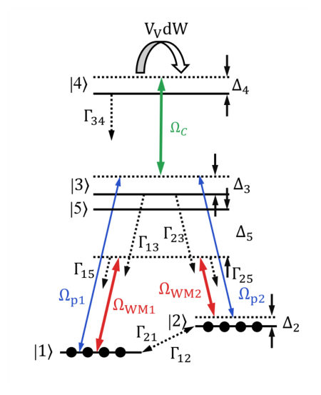
<figcaption class="paper-figure-caption"><b>Fig 1.</b> FIG. 1. Excitation scheme of the multi-level cold atomic system combining a wave-mixing (WM) field and long-range Rydberg inter- actions. Atoms initially populate the nearly degenerate Zeeman dual ground states |1⟩and |2⟩(black dots). The two circular polarization components (blue, Ω𝑝1, Ω𝑝2) of the weak probe light independently drive the transitions to the intermediate state |3⟩. A strong control field (green, Ω𝑐) couples |3⟩to the Rydberg state |4⟩, establish- ing a dual-EIT core configuration. The far-detuned WM field (red, Ω𝑊𝑀1, Ω𝑊𝑀2) couples the dual ground states to the auxiliary state |5⟩to break the initial symmetry of the polarization evolution. Here, Δ𝑗(𝑗= 2, 5) denotes the...</figcaption>
</figure>
<figure class="paper-figure-card">
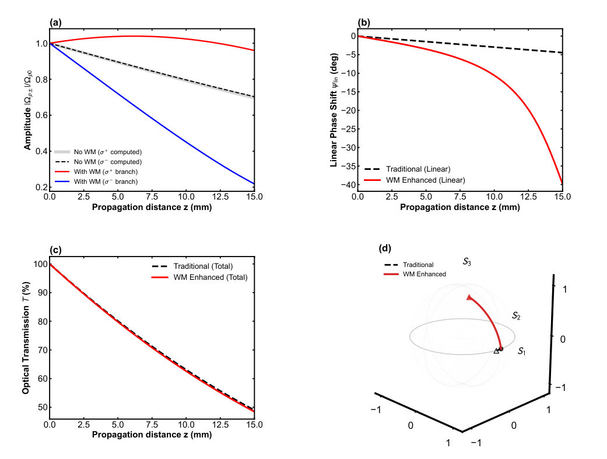
<figcaption class="paper-figure-caption"><b>Fig 2.</b> FIG. 2. Energy symmetry breaking and spatiotemporal dynamics of the macroscopic polarization driven by the WM field. The interaction length is 𝐿= 15 mm. (a) Asymmetric spatial evolution of normalized electric field amplitudes for the left-handed (𝜎+, red solid line) and right-handed (𝜎−, blue solid line) circular polarizations. Black dashed and gray solid lines indicate the symmetric, overlapping trajectories without the WM field. (b) Accumulation of the pure first-order linear background rotation angle 𝜓lin. The WM field establishes a substantial linear dispersion bias reaching −39.81◦. (c) Spatial evolution of the total optical transmission 𝑇. This confirms that the far-detuned breaking...</figcaption>
</figure>
<figure class="paper-figure-card">
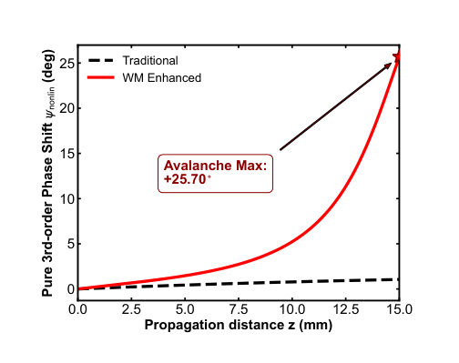
<figcaption class="paper-figure-caption"><b>Fig 3.</b> FIG. 3. Spatial avalanche of the pure third-order many-body non- local Kerr phase shift. The plot traces the accumulation of the pure third-order nonlinear rotation angle 𝜓nonlin against medium depth. To strictly isolate the local linear dispersion background, this metric is precisely extracted by subtracting the pure first-order linear background from the system’s total macroscopic rotation an- gle (which includes the long-range van der Waals integral), i.e., 𝜓nonlin = 𝜓total −𝜓lin. The black dashed line shows that under tradi- tional polarization excitation, the energy-symmetry-based blockade against propagation growth stifles the macroscopic spontaneous ac- cumulation of the strongly...</figcaption>
</figure>
<figure class="paper-figure-card">
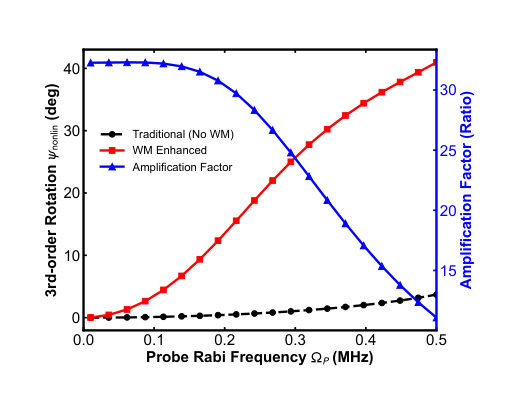
<figcaption class="paper-figure-caption"><b>Fig 4.</b> FIG. 4. Dependence of the third-order nonlinear rotation angle and the amplification factor on the probe field Rabi frequency. The plot displays the relationship between the third-order nonlinear rotation angle 𝜓nonlin and the probe field Rabi frequency Ω𝑝at 15 mm. The black dashed line with circles and the red solid line with squares denote the third-order nonlinear rotation angle without the WM field (traditional scheme) and with the WM field (WM enhanced scheme), respectively, corresponding to the left vertical axis. The blue solid line with triangles charts the amplification factor, corresponding to the right vertical axis. The horizontal axis represents the probe field Rabi frequency...</figcaption>
</figure>
<figure class="paper-figure-card">
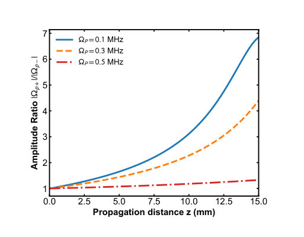
<figcaption class="paper-figure-caption"><b>Fig 5.</b> FIG. 5. Spatial evolution of the local amplitude ratio (|Ω𝑝+|/|Ω𝑝−|) between the two circular polarization components along the propaga- tion direction 𝑧under varying incident probe Rabi frequencies Ω𝑝.</figcaption>
</figure>
</div>

<p><strong>Summary.</strong> This theoretical study proposes using a far-detuned wave-mixing field in a Rydberg atomic gas to overcome an inherent energy-symmetry blockade limiting nonlinear magneto-optical rotation. By breaking this symmetry, the authors demonstrate a massive enhancement (over 24 times) of the measurable third-order nonlinear Kerr effect. This offers a highly efficient mechanism for developing next-generation ultrasensitive atomic magnetometers.</p>
<p><strong>Why it may be interesting.</strong> This work provides a sophisticated theoretical blueprint for enhancing nonlinear optical effects in quantum media by actively engineering the system's symmetry using auxiliary fields, which is highly relevant to quantum sensing and nonlinear optics.</p>
<details>
<summary>Detailed structure</summary>
<p><strong>Main problem.</strong> The paper addresses the limitation of the nonlinear magneto-optical rotation (NMOR) signal in conventional single-beam excitation systems due to an energy-symmetry-induced propagation blockade.</p>
<p><strong>Main result.</strong> By introducing a far-detuned, counterpropagating wave-mixing field, the symmetry blockade is broken, leading to a giant enhancement (factor &gt; 24) of the third-order nonlinear rotation angle.</p>
<p><strong>Method.</strong> The authors employ adiabatic elimination, a perturbation expansion, and the Reduced Density-Matrix Expansion (RDME) method to self-consistently solve the many-body dynamics.</p>
<p><strong>Model / system.</strong> The system is an ultracold five-level Rydberg atomic gas interacting with multiple laser fields (probe, control, wave-mixing) and long-range van der Waals interactions. The dynamics are governed by the Lindblad quantum master equation.</p>
<p><strong>Key observables.</strong> Magneto-optical rotation angle ($\psi(z)$), pure third-order nonlinear rotation angle ($\psi_{	ext{nonlin}}$), and polarization asymmetry ratio ($|\Omega_{p+}|/|\Omega_{p-}|$).</p>
<p><strong>Important parameters / regimes.</strong> The enhancement factor (&gt;24), the Rydberg blockade radius ($R_b$), and the small parameters governing the approximations ($\epsilon_p, \epsilon_W$).</p>
<p><strong>Assumptions / limitations.</strong> The WM field is treated as a steady-state dressing field, and the analysis relies on the weak-field and adiabatic approximations ($\epsilon_p \ll 1, \epsilon_W \ll 1$).</p>
<p><strong>Figures summary.</strong> Figures illustrate the excitation scheme involving five levels and show the spatial evolution of Rabi frequency envelopes and the resulting polarization state on the Poincaré sphere.</p>
<p><strong>Paper structure.</strong> The paper systematically develops the theoretical framework by first applying adiabatic elimination to incorporate the WM field's effect, followed by a perturbation expansion and the use of RDME to solve the resulting coupled, nonlocal differential equations for the macroscopic polarization state.</p>
</details>
<details>
<summary>Abstract</summary>
<p>The nonlinear magneto-optical rotation effect is central to precision measurements of weak magnetic fields and optical quantum information processing. In conventional single-beam excitation systems, the propagation of the nonlinear signal is restricted by an energy-symmetry-induced propagation blockade. This blockade originates from the symmetrical evolution of the orthogonal circularly polarized components of the probe field, which prevents spatial accumulation of the nonlinear polarization. We propose introducing a far-detuned, counterpropagating wave-mixing (WM) field into an ultracold five-level Rydberg atomic gas to actively break the excitation symmetry. Theoretically, the far-detuned WM field is treated as a steady-state dressing field. Through adiabatic elimination, the conventional third-order wave-mixing process is effectively reduced and incorporated into the first-order linear background of the system. Combined with the reduced density-matrix expansion method, this approach goes beyond both the mean-field and ground-state approximations, allowing for a self-consistent solution of the many-body dynamics that include nonlocal cascaded integrals governed by long-range van der Waals interactions. Our analytical derivations and numerical calculations demonstrate that this symmetry-breaking mechanism breaks the propagation blockade, enabling efficient utilization of the nonlocal Rydberg Kerr effect. As a result, the third-order nonlinear rotation angle is enhanced by a factor exceeding 24, offering a highly efficient mechanism for ultrasensitive atomic magnetometry and all-optical quantum information processing.</p>
</details>
<p><sub><a href="#top">↑ back to top</a></sub></p>

<p><a id="paper-2606.02512"></a></p>
<h3 id="frustrated-neurons-energy-landscapes-and-relaxation-dynamics-in-repulsive-phase-oscillators"><a href="http://arxiv.org/abs/2606.02512v1">Frustrated neurons: Energy landscapes and relaxation dynamics in repulsive phase oscillators</a></h3>
<p><strong>Authors:</strong> Brandon B. Le<br>
<strong>Type:</strong> theory · <strong>Category:</strong> disordered systems and neural networks · <strong>PDF:</strong> <a href="https://arxiv.org/pdf/2606.02512v1">https://arxiv.org/pdf/2606.02512v1</a><br>
<strong>Analysis basis:</strong> full PDF text, analyzed in chunks
<strong>Topic relevance:</strong> <code>analog quantum simulation</code> <strong>3/5</strong> · <code>exotic spin models in light-matter</code> <strong>3/5</strong> · <code>driven-dissipative phase transition</code> <strong>2/5</strong> · <code>non-equilibrium dynamics</code> <strong>2/5</strong> · <code>non-equilibrium universality</code> <strong>2/5</strong> · <code>Frenkel-Kontorova</code> <strong>1/5</strong> · <code>methods for driven-dissipative</code> <strong>1/5</strong></p>
<div class="figure-strip-hint">↔ Scroll figures horizontally</div>
<div class="paper-figures-scroll">
<figure class="paper-figure-card">

<figcaption class="paper-figure-caption"><b>Fig 1.</b> FIG. 1. Antiferromagnetic Ising frustration on a triangle. Fixing two neighboring spins to satisfy one bond leaves the third spin unable to be antiparallel to both, so at least one bond must remain unsatisfied.</figcaption>
</figure>
<figure class="paper-figure-card">

<figcaption class="paper-figure-caption"><b>Fig 2.</b> FIG. 2. Schematic hierarchy of frustrated phase-oscillator geometries studied in Sec. IV. (a) A two-oscillator pair provides the unfrustrated baseline: a single repulsive bond can be satisfied exactly by an antiphase relation. (b) The triangular motif is the minimal geometrically frustrated unit, where three repulsive bonds cannot all be satisfied simultaneously, so the reduced ground states form two chiral 120◦configurations. (c) The tetrahedral motif introduces a continuous reduced ground-state manifold, organized by antipodal pairings of planar spins. (d) A small kagome lattice extends the triangular constraint to a network of corner-sharing triangles, producing a many-state constrained...</figcaption>
</figure>
<figure class="paper-figure-card">

<figcaption class="paper-figure-caption"><b>Fig 3.</b> FIG. 4. Two-oscillator baseline for a single phase-repulsive bond. (a) The laboratory-frame phases θi, shown modulo 2π, continue to rotate while approaching a fixed antiphase separation. Passing to the rotating-frame variables ϕi = θi − ωt removes the common drift without changing the relative phase, δ = θ1 −θ2 = ϕ1 −ϕ2. (b) The one-bond energy E = K cos δ decreases toward its minimum value at δ = π, while the bond-frustration measure f12 = (1+cos δ)/2 relaxes to zero, indicating a fully satisfied antiphase bond.</figcaption>
</figure>
<figure class="paper-figure-card">

<figcaption class="paper-figure-caption"><b>Fig 4.</b> FIG. 3. Reduced energy-landscape description of the two- oscillator phase-repulsive bond. (a) The one-bond energy E(δ) = K cos δ has unstable in-phase maxima at δ = 0 and 2π, and a stable antiphase minimum at δ = π. Arrows indi- cate the direction of the reduced gradient flow in the relative phase δ. (b) Relative-phase trajectories from many initial conditions converge to the antiphase state δ = π. The ex- actly in-phase state is unstable and remains fixed only for the fine-tuned initial condition δ = 0 mod 2π.</figcaption>
</figure>
<figure class="paper-figure-card">

<figcaption class="paper-figure-caption"><b>Fig 5.</b> FIG. 5. Reduced energy landscape and gradient-flow dynamics of the frustrated triangular motif. The global phase degree of freedom is removed by working in the relative rotating-frame coordinates (x, y) = (ϕ1 −ϕ3, ϕ2 −ϕ3). (a) Three-dimensional surface plot of the energy E/K = cos(ϕ1 −ϕ2) + cos(ϕ2 −ϕ3) + cos(ϕ3 −ϕ1) expressed on the relative-phase plane. The two red points mark the degenerate 120◦minima, corresponding to the two possible chiral arrangements of the phases. (b) Contour plot of the same landscape with white energy contours and green gradient-flow trajectories from many initial conditions. The flow relaxes toward one of the two chiral minima, labeled by χ△= ±1. The cyan square...</figcaption>
</figure>
</div>

<p><strong>Summary.</strong> This work translates the concept of geometrical frustration from condensed matter physics into a minimal theory for neural timing. By mapping repulsive phase oscillators to an antiferromagnetic XY model, the authors show that local timing incompatibilities create structured energy landscapes. This suggests that weak global coherence in the brain may be a signature of complex, locally ordered dynamics rather than mere desynchronization.</p>
<p><strong>Why it may be interesting.</strong> The use of established tools from frustrated magnetism (e.g., ground-state manifolds, metastable states) to diagnose collective behavior in neural oscillators provides a powerful, non-equilibrium diagnostic framework.</p>
<details>
<summary>Detailed structure</summary>
<p><strong>Main problem.</strong> To develop a minimal theoretical framework that maps the concept of geometrical frustration, central to condensed matter physics, onto the dynamics of repulsively coupled rhythmic units in neural systems.</p>
<p><strong>Main result.</strong> The paper shows that weak global coherence in neural systems can reflect structured local timing order dictated by a frustrated dynamical landscape, rather than indicating simple disorder.</p>
<p><strong>Method.</strong> The authors use the language of antiferromagnetic XY models and analyze the energy landscapes and relaxation dynamics across a hierarchy of geometries (triangle, tetrahedron, kagome lattice).</p>
<p><strong>Model / system.</strong> The model consists of repulsively coupled phase oscillators, mathematically analogous to the XY model Hamiltonian, where local constraints (anti-synchronizing phase preferences) are incompatible on non-bipartite motifs.</p>
<p><strong>Key observables.</strong> Local chirality ($\chi_	riangle$), mean bond frustration ($ar{f}$), basin probabilities ($p_A$), and the Kuramoto order parameter ($R$).</p>
<p><strong>Important parameters / regimes.</strong> Temperature ($T$) (noise strength), coupling strength ($K$), and the geometry of the lattice (e.g., triangle, kagome).</p>
<p><strong>Assumptions / limitations.</strong> The theory relies on a minimal phase-oscillator limit, neglecting amplitude dynamics, synaptic delays, and assuming symmetric coupling.</p>
<p><strong>Figures summary.</strong> Figures illustrate the $120^\circ$ pattern on a triangle and the general energy landscape analysis for various frustrated geometries.</p>
<p><strong>Paper structure.</strong> The paper establishes a dictionary mapping magnetic concepts to neural timing analogs, derives the phase energy function for the XY model, and then analyzes the relaxation dynamics across increasing complexity of frustrated geometries.</p>
</details>
<details>
<summary>Abstract</summary>
<p>Geometrical frustration, a central paradigm in condensed matter physics, provides a unifying language for systems in which locally preferred interactions cannot be made globally compatible. Here, we use this language to formulate a minimal theory of frustrated neural timing, mapping repulsively coupled rhythmic units onto antiferromagnetic XY models. Within this framework, the condensed-matter concepts of local constraints, degenerate ground-state manifolds, metastability, and quench dynamics become a concrete diagnostic framework for structured neural phase dynamics. We analyze a hierarchy of geometries: a triangle as the minimal frustrated motif with two chiral 120° timing states, a tetrahedron whose reduced ground-state manifold consists of intersecting continuous branches associated with antipodal pairings, and a kagome lattice on which local constraints define a constrained three-coloring manifold. The kagome lattice reveals the central dynamical result: zero-temperature relaxation suppresses global synchrony but typically selects low-energy metastable torque-balanced states rather than exact ground states. Finally, we show how the phase theory can be carried back towards biophysical neural models by treating it as an effective-interaction target, where geometrical timing frustration is realized through preferred phase lags that become incompatible around closed motifs. This perspective suggests that weak global coherence in neural systems does not necessarily signal disordered activity, but can reflect structured local timing order shaped by a frustrated dynamical landscape.</p>
</details>
<p><sub><a href="#top">↑ back to top</a></sub></p>

<p><a id="paper-2606.01887"></a></p>
<h3 id="can-the-brownian-diffusion-coefficient-be-reconstructed-from-lyapunov-exponents"><a href="http://arxiv.org/abs/2606.01887v1">Can the Brownian diffusion coefficient be reconstructed from Lyapunov exponents?</a></h3>
<p><strong>Authors:</strong> I. G. Marchenko, I. I. Marchenko, D. Ivashchenko, J. Łuczka, J. Spiechowicz<br>
<strong>Type:</strong> theory · <strong>Category:</strong> statistical mechanics · <strong>PDF:</strong> <a href="https://arxiv.org/pdf/2606.01887v1">https://arxiv.org/pdf/2606.01887v1</a><br>
<strong>Analysis basis:</strong> full PDF text, analyzed in chunks
<strong>Topic relevance:</strong> <code>non-equilibrium dynamics</code> <strong>3/5</strong> · <code>non-equilibrium universality</code> <strong>3/5</strong> · <code>Frenkel-Kontorova</code> <strong>2/5</strong> · <code>driven-dissipative phase transition</code> <strong>2/5</strong> · <code>methods for driven-dissipative</code> <strong>2/5</strong> · <code>Keldysh / 2PI / non-Gaussian methods</code> <strong>1/5</strong></p>
<div class="figure-strip-hint">↔ Scroll figures horizontally</div>
<div class="paper-figures-scroll">
<figure class="paper-figure-card">

<figcaption class="paper-figure-caption"><b>Fig 1.</b> FIG. 1. (a) The rescaled diffusion coefficient D/D0 as a func- tion of the ac-driving amplitude a; here D0 = Q/γ denotes the Einstein diffusion coefficient for a force-free particle. The blue curve represents numerical simulations of Eq. (1) and the red curve corresponds to the approximate theory (24). (b) The maximal Lyapunov exponent λ1 of the deterministic counterpart (Q = 0), showing a similar dependence on a. The blue curve represents numerical analysis of Eq. (2), while the red curve corresponds to the approximate theory (22). Pa- rameters are set to γ = 3, ω = 1.59, and Q = 0.1.</figcaption>
</figure>
<figure class="paper-figure-card">

<figcaption class="paper-figure-caption"><b>Fig 2.</b> FIG. 2. Deterministic system (Q = 0): (a) The phase curves position-velocity in stationary states illustrating transition from normal (a &lt; ac) to symmetry-broken states (a &gt; ac) under variation of the driving amplitude a. The dotted curve represents the spatially periodic potential U(x) (b) Bifurcation diagram illustrating the bifurcation point a = ac where normal and inverted oscillations emerge; x is the asymptotic average of x(t) over one period 2π/ω of the driving. (c) Amplitude of the periodic orbits versus a. Other parameters are the same as in Fig. 1.</figcaption>
</figure>
<figure class="paper-figure-card">

<figcaption class="paper-figure-caption"><b>Fig 3.</b> FIG. 3. Deterministic system (Q = 0): Periodic orbits for normal and symmetry-broken states illustrating the influence of the external driving amplitude a. Remaining parameters are consistent with Fig. 1.</figcaption>
</figure>
<figure class="paper-figure-card">

<figcaption class="paper-figure-caption"><b>Fig 4.</b> FIG. 4. Influence of dissipation on the system dynamics for damping constants γ = 2, 1, and 0.5. Other parameters are the same as in Fig. 1.</figcaption>
</figure>
<figure class="paper-figure-card">

<figcaption class="paper-figure-caption"><b>Fig 5.</b> FIG. 5. Influence of temperature Q on the diffusion coeffi- cient. The doted curves are obtained from simulations of the Langevin equation (1), whereas continues - from Eq. (24). Other parameters are the same as in Fig. 1.</figcaption>
</figure>
</div>

<p><strong>Summary.</strong> This paper explores the relationship between the diffusion coefficient and Lyapunov exponents for a particle in a periodically driven potential. Despite no general theoretical link, the authors successfully propose and validate an approximate formula that reconstructs the diffusion coefficient using the maximal Lyapunov exponent from the zero-temperature deterministic system. This provides a novel diagnostic tool for characterizing non-equilibrium transport phenomena.</p>
<p><strong>Why it may be interesting.</strong> The connection between transport coefficients (like D) and deterministic chaos indicators (like $\lambda$) is a fundamental topic in non-equilibrium statistical mechanics, providing a powerful tool to characterize complex dynamics.</p>
<details>
<summary>Detailed structure</summary>
<p><strong>Main problem.</strong> The paper investigates whether the Brownian diffusion coefficient of a driven particle can be reconstructed from the maximal Lyapunov exponent of the corresponding deterministic system.</p>
<p><strong>Main result.</strong> The authors demonstrate a strong, quantifiable relationship, proposing an approximate formula that allows the reconstruction of the quasiperiodic diffusion coefficient from the maximal Lyapunov exponent of the zero-temperature deterministic system.</p>
<p><strong>Method.</strong> The analysis combines numerical simulations of the Langevin equation with theoretical approximations derived from analyzing the deterministic counterpart's periodic orbits and linearized dynamics.</p>
<p><strong>Model / system.</strong> The system models a particle moving in a spatially periodic and symmetric potential, subjected to an AC-driven external force and thermal noise (Brownian motion).</p>
<p><strong>Key observables.</strong> Diffusion Coefficient (D), Maximal Lyapunov Exponent ($\lambda_{	ext{max}}$), Mean Square Displacement ($\langle \Delta x^2(t) 
angle / 2t$).</p>
<p><strong>Important parameters / regimes.</strong> External driving amplitude ($a$), friction coefficient ($\gamma$), temperature/noise intensity ($Q$), and system frequency ($\omega$).</p>
<p><strong>Assumptions / limitations.</strong> The reconstruction formula is proposed as an approximation, showing good agreement but noting discrepancies near local maxima of D. The analysis relies on the system being ergodic at non-zero temperatures.</p>
<p><strong>Figures summary.</strong> Figures illustrate the dependence of D and $\lambda_{	ext{max}}$ on the driving amplitude $a$, showing quasiperiodic behavior, and also show the influence of temperature $Q$ and damping $\gamma$ on these quantities.</p>
<p><strong>Paper structure.</strong> The paper first establishes the physical model using the Langevin equation, then analyzes the dynamics in different parameter regimes (zero vs. non-zero temperature). It proceeds to derive and test an approximate formula linking D to $\lambda_{	ext{max}}$ by comparing theoretical predictions with extensive numerical simulations.</p>
</details>
<details>
<summary>Abstract</summary>
<p>We consider an ac-driven particle moving in a spatially periodic and symmetric potential. In the zero- temperature limit, for the analyzed parameter set, its dynamics is non-chaotic and the particle does not manifest diffusive properties. At non-zero temperatures, the asymptotic long-time motion follows normal (Brownian) diffusion. Recent studies have shown that within tailored parameter regimes, the diffusion coef- ficient is a quasiperiodic function of the external driving amplitude [1]. Although no general relation between Lyapunov exponents and Brownian diffusion exists, we demonstrate that the quasiperiodic diffusion coefficient at non-zero temperature can be accurately reconstructed from the maximal Lyapunov exponent of the corresponding deterministic system (at vanishing temperature). We propose an approximate formula for this purpose, which shows good agreement with numerical simulations, although some discrepancies are detected in the vicinity of the local maxima of the diffusion coefficient. Finally, we examine the robustness of the correlation between diffusion and the Lyapunov exponent under variations of the system parameters.</p>
</details>
<p><sub><a href="#top">↑ back to top</a></sub></p>

<p><a id="paper-2606.00242"></a></p>
<h3 id="experimental-observation-of-strong-field-stabilization"><a href="http://arxiv.org/abs/2606.00242v1">Experimental observation of strong field stabilization</a></h3>
<p><strong>Authors:</strong> Anna R. Dardia, Spencer Walker, Yifei Bai, Petros Kousis, Alexandra S. Landsman, David M. Weld<br>
<strong>Type:</strong> both · <strong>Category:</strong> other · <strong>PDF:</strong> <a href="https://arxiv.org/pdf/2606.00242v1">https://arxiv.org/pdf/2606.00242v1</a><br>
<strong>Analysis basis:</strong> full PDF text, analyzed in chunks
<strong>Topic relevance:</strong> <code>analog quantum simulation</code> <strong>3/5</strong> · <code>non-equilibrium dynamics</code> <strong>3/5</strong> · <code>driven-dissipative phase transition</code> <strong>2/5</strong> · <code>methods for driven-dissipative</code> <strong>2/5</strong> · <code>non-equilibrium universality</code> <strong>2/5</strong> · <code>Keldysh / 2PI / non-Gaussian methods</code> <strong>1/5</strong></p>
<div class="figure-strip-hint">↔ Scroll figures horizontally</div>
<div class="paper-figures-scroll">
<figure class="paper-figure-card">

<figcaption class="paper-figure-caption"><b>Fig 1.</b> FIG. 1. Probing strong-field dynamics with trapped atoms. a) Diagram of the experimental setup. The trap position is varied by an acousto-optic modulator to induce inertial forces which correspond to the electric fields of a laser pulse. b) Absorption images of strontium atoms subjected to a 4-cycle pulse with amplitude A = 38.3 µm and frequency ωdrive = 1.14 ω0 (2π × 32 Hz), taken at various times during the pulse to reveal sub-cycle dynamics. Solid line indicates the time- dependent position of the trap center. The observed unbinding from the trap partway through the pulse corresponds to strong-field photoionization. c) Absorption images of atoms after a 250 ms ramp-up to a range of final...</figcaption>
</figure>
<figure class="paper-figure-card">

<figcaption class="paper-figure-caption"><b>Fig 2.</b> FIG. 2. Observation of strong-field stabilization. a) Measured unbinding rate in a constant amplitude field of frequency 1.43 ω0 (40 Hz), plotted versus quiver amplitude. After a 6-cycle ramp into a flat-top pulse, the surviving population is measured via absorption imaging after varying durations, and the decay constant is determined by an exponential fit. Note the sharp decrease in loss rate above a critical quiver amplitude. Error bars denote 95% confidence intervals; inset depicts one such fit. b) Surviving population fraction following a 16-cycle 1.43 ω0 (40 Hz) sin2-envelope pulse as a function of quiver amplitude. Symbols denote experimental data; solid red curve shows the results of...</figcaption>
</figure>
<figure class="paper-figure-card">

<figcaption class="paper-figure-caption"><b>Fig 3.</b> FIG. 3. Dependence of stabilization on frequency and amplitude. a) Normalized surviving population following a 16-cycle pulse with a sin2 envelope following the same procedure as in Fig 2(b), for drive frequencies of 0.89 ω0 to 1.43 ω0 (25 to 40 Hz). Dashed line indicates the point where the quiver amplitude equals w/2. Solid lines in corresponding shades represent the results of GPE numerics. b) 2D stability diagram exploring the dependence of strong-field stabilization on frequency and amplitude over a wider range of amplitudes, in terms of maximum acceleration: Aω2 drive. Each pixel denotes the surviving bound population following a 16-cycle sin2 pulse, normalized by the population in...</figcaption>
</figure>
<figure class="paper-figure-card">

<figcaption class="paper-figure-caption"><b>Fig 4.</b> FIG. 4. Effect of pulse shape on ionization Measured surviving population versus amplitude following a 16-cycle trapezoidal pulse of frequency 1.34 ω0 (37.5 Hz), with the du- ration of the ramp-up and ramp-down varied. Error bars rep- resent standard error; lines are guides to the eye. Inset shows the trap center motion during a 6-cycle ramp, as measured by a position-sensitive photodiode.</figcaption>
</figure>
<figure class="paper-figure-card">

<figcaption class="paper-figure-caption"><b>Fig 5.</b> Figure 1: Unshaken Gaussian trap potential (β = 0) as a function of position scaled by the beam waist w. Blue solid: Gaussian potential Vtrap(x) = −V0 exp(−2x2/w2). Magenta dash–dot: cut– parabola approximation (harmonic oscillator truncated at V = 0). Cyan dashed: trapezoidal approximation. The potential depth is V0. Horizontal lines denote the chemical potentials for condensates with N0 = 40 k, 100 k, and 250 k, and the corresponding shaded regions indicate the Thomas–Fermi fillings for each case.</figcaption>
</figure>
</div>

<p><strong>Summary.</strong> This research reports the first experimental observation of strong-field stabilization in trapped atoms, confirming a decades-old prediction that intense laser fields can stabilize quantum states. By measuring ionization rates and observing wavepacket bifurcation, the authors validate the theory using ultracold atoms as an analogue for bound electrons. This work advances the understanding of quantum dynamics in extreme electromagnetic environments.</p>
<p><strong>Why it may be interesting.</strong> This work provides a crucial experimental realization of a long-standing theoretical prediction in extreme quantum dynamics, offering a complementary tool to probe strong-field physics inaccessible with current pulsed laser technology.</p>
<details>
<summary>Detailed structure</summary>
<p><strong>Main problem.</strong> The paper investigates the counter-intuitive phenomenon of strong-field stabilization, where intense oscillating fields stabilize bound quantum states against ionization.</p>
<p><strong>Main result.</strong> The authors experimentally observe strong-field stabilization in trapped atoms and confirm the predicted wavefunction bifurcation, showing stabilization persists even at surprisingly low drive frequencies.</p>
<p><strong>Method.</strong> The study combines experimental measurements on trapped ultracold atoms with detailed numerical simulations using the Gross-Pitaevskii Equation (GPE) to model the dynamics.</p>
<p><strong>Model / system.</strong> The system uses trapped neutral atoms (e.g., Sr BEC) subjected to time-dependent inertial forces to emulate the dynamics of bound electrons in an intense laser field, modeled by the Kramers-Henneberger potential.</p>
<p><strong>Key observables.</strong> Ionization rate (loss rate), spatial bifurcation/dichotomy of the wavepacket, and surviving population fraction as a function of field amplitude.</p>
<p><strong>Important parameters / regimes.</strong> Quiver amplitude ($A$), drive frequency ($\omega$), and the critical amplitude ($A_{	ext{crit}}$) required to induce stabilization.</p>
<p><strong>Assumptions / limitations.</strong> The single-active electron approximation is used in some analyses, and the GPE simulations are noted to neglect finite-temperature or beyond-mean-field effects.</p>
<p><strong>Figures summary.</strong> Figures illustrate the experimental setup, sub-cycle dynamics, wavepacket bifurcation, and quantitative plots showing the non-monotonic dependence of the ionization rate on the quiver amplitude, confirming stabilization.</p>
<p><strong>Paper structure.</strong> The paper progresses from establishing the theoretical prediction of stabilization, detailing the experimental platform using trapped atoms, presenting measurements of ionization rates and wavepacket bifurcation across varying field parameters, and concluding with a general confirmation of the phenomenon's robustness.</p>
</details>
<details>
<summary>Abstract</summary>
<p>Strong oscillating fields are expected to tear apart bound quantum states. Theoretical studies predict a striking reversal: that as the field intensity is raised above some threshold, bound states like atoms can become increasingly stable, accompanied by a spatial bifurcation of the bound state wavefunction. This strong field stabilization was predicted decades ago in the context of atoms in pulsed laser fields, but has resisted experimental observation due to extreme intensity requirements and theoretical controversy. Here we report the experimental observation of strong-field stabilization of a ground state, using trapped neutral atoms to emulate the dynamics of bound electrons in an extremely strong laser field. We image the predicted wavepacket bifurcation, measure an ionization rate non-monotonic in field amplitude, and map out the regime of stabilization. Stabilization persists down to surprisingly low drive frequencies, on the order of the lowest-energy excitations. These results confirm a long-standing prediction in extreme quantum dynamics, and showcase a complementary tool for probing strong-field phenomena near and beyond the frontier of current laser technology.</p>
</details>
<p><sub><a href="#top">↑ back to top</a></sub></p>

<p><a id="paper-2606.01988"></a></p>
<h3 id="linear-optimal-protocol-for-physical-constraints-in-weakly-driven-processes"><a href="http://arxiv.org/abs/2606.01988v1">Linear optimal protocol for physical constraints in weakly driven processes</a></h3>
<p><strong>Authors:</strong> Pierre Nazé<br>
<strong>Type:</strong> theory · <strong>Category:</strong> statistical mechanics · <strong>PDF:</strong> <a href="https://arxiv.org/pdf/2606.01988v1">https://arxiv.org/pdf/2606.01988v1</a><br>
<strong>Analysis basis:</strong> full PDF text, analyzed in chunks
<strong>Topic relevance:</strong> <code>methods for driven-dissipative</code> <strong>3/5</strong> · <code>correlated / nonlocal dissipation</code> <strong>2/5</strong> · <code>driven-dissipative phase transition</code> <strong>2/5</strong> · <code>non-equilibrium dynamics</code> <strong>2/5</strong> · <code>non-equilibrium universality</code> <strong>2/5</strong> · <code>Keldysh / 2PI / non-Gaussian methods</code> <strong>1/5</strong></p>
<div class="figure-strip-hint">↔ Scroll figures horizontally</div>
<div class="paper-figures-scroll">
<figure class="paper-figure-card">

<figcaption class="paper-figure-caption"><b>Fig 1.</b> FIG. 1. Linear protocol observed for all relaxation functions proposed in this work and τ/τR = 0.1, 1, 10.</figcaption>
</figure>
</div>

<p><strong>Summary.</strong> This work determines the minimum irreversible work required to drive a weakly coupled quantum system between states under specific constraints. By reformulating the problem using periodic boundary conditions, the authors show that the optimal driving protocol is universally linear. This result highlights that the minimum dissipation is dictated by the global memory properties of the system, independent of the specific details of the relaxation kernel.</p>
<p><strong>Why it may be interesting.</strong> It provides a rigorous, spectral understanding of optimal dissipation in non-equilibrium quantum processes, showing that simple linear protocols minimize work even when complex memory effects are present.</p>
<details>
<summary>Detailed structure</summary>
<p><strong>Main problem.</strong> The paper minimizes the irreversible work done in weakly driven quantum systems while respecting physical constraints on the driving protocol's derivative.</p>
<p><strong>Main result.</strong> The global optimal protocol is found to be linear, resulting in an optimal work value that depends only on the integrated relaxation function.</p>
<p><strong>Method.</strong> The problem is formulated as a constrained variational minimization, leading to a shifted eigenvalue equation solved by exploiting the periodicity of the relaxation kernel in a Fourier basis.</p>
<p><strong>Model / system.</strong> The study concerns weakly driven quantum systems analyzed within the framework of linear response theory. The dynamics are governed by an irreversible work functional involving a relaxation function $\Psi_0(t)$.</p>
<p><strong>Key observables.</strong> Irreversible work ($   ext{Wirr}[v]$), the relaxation function $\Psi_0(t)$, and the optimal work ($    ext{W}^*_{  ext{irr}}$).</p>
<p><strong>Important parameters / regimes.</strong> The driving time $  au$, the constraints on total variation ($\delta\lambda$), and the quadratic bound on the driving speed ($C$).</p>
<p><strong>Assumptions / limitations.</strong> The analysis assumes the system is in the weak driving regime and requires extending the relaxation kernel periodically to restore translational invariance.</p>
<p><strong>Figures summary.</strong> Tables compare numerical results for the optimal work across various relaxation functions ($\exp(-|t|/	au_R)$, $J_0$, $\sin$, $\cos$), showing convergence to an analytical prediction. Figure 1 illustrates the resulting linear protocol.</p>
<p><strong>Paper structure.</strong> The paper establishes the variational problem, derives the associated shifted eigenvalue equation, solves it using Fourier analysis on a periodic domain, and confirms the universal linear solution through numerical testing across multiple kernel types.</p>
</details>
<details>
<summary>Abstract</summary>
<p>The minimization of irreversible work in weakly driven systems within linear response under physical constraints on the protocol derivative is studied. The problem reduces to a shifted eigenvalue equation involving the relaxation function. Owing to its dependence on time differences and its evenness, the relaxation kernel is naturally defined over a symmetric interval, where a periodic representation arises as a consistent closure that restores continuous translational invariance. Also, it shows how the irreversible work is defined in practice. Within this framework, the operator becomes diagonal in a Fourier basis. The global optimal solution is the zero mode, yielding a constant driving speed and a linear protocol. The corresponding optimal work depends only on the integrated relaxation function. Numerical results obtained via genetic programming confirm the robustness of this solution across different kernels.</p>
</details>
<p><sub><a href="#top">↑ back to top</a></sub></p>

<p><a id="paper-2606.01071"></a></p>
<h3 id="modular-theory-and-affine-representations-on-the-rindler-horizon"><a href="http://arxiv.org/abs/2606.01071v1">Modular theory and affine representations on the Rindler horizon</a></h3>
<p><strong>Authors:</strong> Michele Arzano, Paolo Palumbo<br>
<strong>Type:</strong> theory · <strong>Category:</strong> statistical mechanics · <strong>PDF:</strong> <a href="https://arxiv.org/pdf/2606.01071v1">https://arxiv.org/pdf/2606.01071v1</a><br>
<strong>Analysis basis:</strong> full PDF text, analyzed in chunks
<strong>Topic relevance:</strong> <code>entanglement &amp; information structure</code> <strong>3/5</strong> · <code>Keldysh / 2PI / non-Gaussian methods</code> <strong>2/5</strong> · <code>methods for driven-dissipative</code> <strong>2/5</strong> · <code>non-equilibrium dynamics</code> <strong>2/5</strong> · <code>correlated / nonlocal dissipation</code> <strong>1/5</strong> · <code>driven-dissipative phase transition</code> <strong>1/5</strong> · <code>non-equilibrium universality</code> <strong>1/5</strong></p>
<div class="figure-strip-hint">↔ Scroll figures horizontally</div>
<div class="paper-figures-scroll">
<figure class="paper-figure-card">

<figcaption class="paper-figure-caption"><b>Fig 1.</b> FIG. 1: Visualization of the algebra A+ and its v-translated U(γ)A+U †(γ) for positive γ. Notice that U(γ)A+U †(γ) ̸⊆A+ for γ &lt; 0, since points are moved across the horizon (in this sense, the origin).</figcaption>
</figure>
</div>

<p><strong>Summary.</strong> This paper provides a deep mathematical framework for understanding the Unruh effect by interpreting it through the lens of affine symmetry and modular theory. It shows that the thermal nature observed by an accelerated observer is mathematically equivalent to the modular flow of the restricted quantum field algebra. This establishes the affine group as the minimal symmetry governing horizon thermality.</p>
<p><strong>Why it may be interesting.</strong> The connection between the Unruh effect, which is fundamentally about thermalization in curved spacetime, and the rigorous mathematical machinery of modular theory provides deep insights into how entanglement and thermal properties emerge from local algebraic structures.</p>
<details>
<summary>Detailed structure</summary>
<p><strong>Main problem.</strong> The paper develops a group-theoretic interpretation of the Unruh effect by relating it to modular theory and affine symmetry on the Rindler horizon.</p>
<p><strong>Main result.</strong> The affine group structure captures the minimal symmetry underlying the Unruh effect, which is confirmed by modular theory showing the dilation flow implements the KMS condition on the restricted vacuum.</p>
<p><strong>Method.</strong> The analysis uses light-cone coordinates, compares Minkowski and Rindler mode expansions via the Mellin transform, and applies Tomita-Takesaki modular theory to characterize the thermal nature.</p>
<p><strong>Model / system.</strong> The system is a massless scalar field in two spacetime dimensions, analyzed by restricting its vacuum state to a single Rindler wedge near a horizon.</p>
<p><strong>Key observables.</strong> The thermal factor $e^{-2\pi\omega}$ derived from the overlap between Minkowski and Rindler bases, and the satisfaction of the KMS condition.</p>
<p><strong>Important parameters / regimes.</strong> The proper acceleration $\alpha$ (related to the temperature $T=1/(2\pi)$), and the spectral parameter $\omega$.</p>
<p><strong>Assumptions / limitations.</strong> The analysis assumes the existence of a suitable vacuum state $|\Omega
angle$ and relies on the algebraic structure of the half-line algebra $A^+$.</p>
<p><strong>Figures summary.</strong> Not specified.</p>
<p><strong>Paper structure.</strong> The paper progresses from establishing the physical problem (Unruh effect) to developing the mathematical tools (affine symmetry, Mellin transform) and finally confirming the thermal nature using the rigorous framework of modular theory and the KMS condition.</p>
</details>
<details>
<summary>Abstract</summary>
<p>We develop a group-theoretic interpretation of the Unruh effect based on affine symmetry on a light ray and relate it to modular theory. For a massless scalar field in two spacetime dimensions inertial and uniformly accelerated observers select two different flows within the same chiral one-particle structure, respectively, null translations and dilations. Minkowski modes are adapted to translations, while Rindler modes are adapted to dilations, with the Mellin transform providing the natural bridge between them. When a Minkowski positive-frequency mode is restricted to a single Rindler wedge, its comparison with Rindler modes is non-unitary within the positive-frequency sector. Modular theory gives the corresponding operator-algebraic interpretation: on the horizon the modular flow of the half-line algebra is implemented by dilations, and the restricted vacuum satisfies the KMS condition. The affine group thus appears as the minimal symmetry structure underlying thermality on the Rindler horizon.</p>
</details>
<p><sub><a href="#top">↑ back to top</a></sub></p>

<p><a id="paper-2606.02239"></a></p>
<h3 id="probing-the-scale-free-hierarchy-of-the-math462math-spherical-spin-glass-via-persistent-langevin-dynamics"><a href="http://arxiv.org/abs/2606.02239v1">Probing the scale-free hierarchy of the $p=3$ spherical spin glass via persistent Langevin dynamics</a></h3>
<p><strong>Authors:</strong> Li Zhenpeng<br>
<strong>Type:</strong> theory · <strong>Category:</strong> disordered systems and neural networks · <strong>PDF:</strong> <a href="https://arxiv.org/pdf/2606.02239v1">https://arxiv.org/pdf/2606.02239v1</a><br>
<strong>Analysis basis:</strong> full PDF text, analyzed in chunks
<strong>Topic relevance:</strong> <code>exotic spin models in light-matter</code> <strong>3/5</strong> · <code>non-equilibrium dynamics</code> <strong>3/5</strong> · <code>non-equilibrium universality</code> <strong>3/5</strong> · <code>analog quantum simulation</code> <strong>1/5</strong> · <code>driven-dissipative phase transition</code> <strong>1/5</strong> · <code>methods for driven-dissipative</code> <strong>1/5</strong></p>
<div class="figure-strip-hint">↔ Scroll figures horizontally</div>
<div class="paper-figures-scroll">
<figure class="paper-figure-card">

<figcaption class="paper-figure-caption"><b>Fig 1.</b> FIG. 1. Energy correlation time τcorr as a function of per- sistence time τp for N = 16, 32, 48, 64, 128 at T = 1.0. Data points are shown with error bars representing the standard error of the mean (SEM) calculated from n = 40–50 indepen- dent trajectories per τp (see Appendix C for exact ntrajs). Dashed lines are power-law fits for τp ∈[2, 32], yielding α values shown in the legend. The black dashed line indicates the KPZ prediction τcorr ∼τ 1/3 p . The annotation shows the finite-size extrapolation to α(∞) = 0.3333 ± 0.0134.</figcaption>
</figure>
<figure class="paper-figure-card">

<figcaption class="paper-figure-caption"><b>Fig 2.</b> FIG. 2. KPZ exponent α as a function of temperature T for N = 64. The dashed line indicates the KPZ prediction α = 1/3. Error bars represent the standard error of the fitted exponent α obtained from weighted linear regression over τp ∈ [2, 32] (for T = 1.0) or τp ∈[4, 32] (for other temperatures).</figcaption>
</figure>
</div>

<p><strong>Summary.</strong> This work uses persistent Langevin dynamics to study the energy landscape of the $p=3$ spherical spin glass. By tuning the walker's inertia via the persistence time $   au_p$, the authors measure the energy correlation time and find it scales with the predicted KPZ exponent ($\alpha=1/3$). This confirms the scale-free hierarchical nature of the landscape and reveals distinct dynamical regimes based on temperature.</p>
<p><strong>Why it may be interesting.</strong> The application of persistent dynamics to probe the energy landscape topology of a spin glass connects concepts from non-equilibrium statistical mechanics (KPZ universality) to disordered systems, which is relevant for understanding complex energy minima in quantum many-body systems.</p>
<details>
<summary>Detailed structure</summary>
<p><strong>Main problem.</strong> The study investigates how a persistent random walker perceives the complex energy landscape of the $p=3$ spherical spin glass.</p>
<p><strong>Main result.</strong> The energy correlation time scales with the persistence time as $  au_{    ext{corr}} \sim     au_p^{1/3}$, confirming that the $p=3$ spherical spin glass belongs to the Kardar–Parisi–Zhang (KPZ) universality class.</p>
<p><strong>Method.</strong> The authors use persistent Langevin dynamics simulations to measure the energy correlation time ($  au_{    ext{corr}}$) as a function of the persistence time ($   au_p$).</p>
<p><strong>Model / system.</strong> The system is the $p=3$ spherical spin glass, governed by a Hamiltonian $H(\mathbf{x}) = rac{1}{3!} \sum_{i,j,k} J_{ijk} x_i x_j x_k$. The dynamics are simulated using persistent Langevin dynamics, which incorporates inertia via the persistence time $ au_p$.</p>
<p><strong>Key observables.</strong> Energy correlation time ($ au_{    ext{corr}}$) and its scaling exponent $\alpha$ defined by $  au_{    ext{corr}} \sim     au_p^\alpha$.</p>
<p><strong>Important parameters / regimes.</strong> Persistence time $  au_p$, Temperature $T$, System size $N$. The analysis identifies three regimes: ballistic/inertial, KPZ, and noise-dominated.</p>
<p><strong>Assumptions / limitations.</strong> The analysis relies on the assumption that $ au_p$ acts as a tunable probe for the energy resolution ($\delta E \sim 1/	au_p$), allowing the detection of the scale-free hierarchy.</p>
<p><strong>Figures summary.</strong> The results show a U-shaped curve for $\alpha(T)$, identifying the three dynamical regimes, and confirm the KPZ scaling exponent $\alpha=1/3$ through finite-size scaling.</p>
<p><strong>Paper structure.</strong> The paper establishes the physical problem, details the use of persistent Langevin dynamics, presents the key finding of KPZ scaling for $p=3$, and analyzes the temperature dependence to map out distinct dynamical regimes.</p>
</details>
<details>
<summary>Abstract</summary>
<p>How does a persistent random walker perceive a complex energy landscape? We address this question by studying the persistent Langevin dynamics of the p=3 spherical spin glass, a paradigmatic mean-field model with a scale-free hierarchical landscape. By tuning the persistence time tau_p, which controls the walker's inertia and effectively sets its energy resolution delta E proportional to 1/tau_p, we measure the energy correlation time tau_corr. At temperature T=1.0, we find tau_corr scales as tau_p to the power alpha with alpha = 0.337 plus or minus 0.035 for tau_p in the range [2,32] (for N=64), in excellent agreement with the Kardar-Parisi-Zhang (KPZ) universality class prediction alpha = 1/3. Finite-size scaling using N = 16,32,48,64,128 yields the thermodynamic limit alpha(infinity) = 0.3333 plus or minus 0.0134, fully consistent with 1/3. Thus, tau_p acts as a tunable probe that reveals the predicted scale-free hierarchy of the landscape. Moreover, the temperature dependence alpha(T) for T = 0.5,1.0,1.5,2.0 exhibits a clear U-shaped curve, identifying three dynamical regimes: ballistic/inertial, KPZ, and noise-dominated. Our results establish persistent Langevin dynamics as a powerful tool for uncovering hidden landscape topology and demonstrate that the p=3 spherical spin glass belongs to the KPZ universality class.</p>
</details>
<p><sub><a href="#top">↑ back to top</a></sub></p>

<p><a id="paper-2606.00255"></a></p>
<h3 id="topics-on-foundations-of-physics-from-the-quantum-to-the-semi-classical-gravity-thermodynamics-and-or-beyond-our-possible-detections"><a href="http://arxiv.org/abs/2606.00255v1">Topics on Foundations of Physics: From the quantum to the (semi) classical, gravity, thermodynamics, and (or beyond) our possible detections</a></h3>
<p><strong>Authors:</strong> Ricardo Muciño<br>
<strong>Type:</strong> theory · <strong>Category:</strong> other · <strong>PDF:</strong> <a href="https://arxiv.org/pdf/2606.00255v1">https://arxiv.org/pdf/2606.00255v1</a><br>
<strong>Analysis basis:</strong> full PDF text, analyzed in chunks
<strong>Topic relevance:</strong> <code>measurement-induced transitions</code> <strong>3/5</strong> · <code>quantum measurements</code> <strong>3/5</strong> · <code>Keldysh / 2PI / non-Gaussian methods</code> <strong>2/5</strong> · <code>entanglement &amp; information structure</code> <strong>2/5</strong> · <code>correlated / nonlocal dissipation</code> <strong>1/5</strong> · <code>methods for driven-dissipative</code> <strong>1/5</strong></p>
<div class="figure-strip-hint">↔ Scroll figures horizontally</div>
<div class="paper-figures-scroll">
<figure class="paper-figure-card">

<figcaption class="paper-figure-caption"><b>Fig 1.</b> Figure 6.1: Spacetime diagram of the EPR setting with two foliations: in yellow th one with hypersurfaces Σt and in blue the one with hypersurfaces Σt′. A and B represent the events associated with Alice and Bob’s measurements in the z−spin basis respectively. P is an event in Alice’s worldline, before she makes her measurement, and R is an event in Bob’s worldline, after he makes his measurement.</figcaption>
</figure>
<figure class="paper-figure-card">

<figcaption class="paper-figure-caption"><b>Fig 2.</b> Figure 8.1: Different foliations sharing the same hypersurface Σtf. Independently of which foliation is used to arrive to the state in Σtf, e.g. the one that contains Σt′ with the associated state ρ′, or Σt′′ with ρ′′, the theory should assign the same ρ(Σtf) to Σtf. And any differences between the states ρ′ and ρ0 are due to what happens in Γ.</figcaption>
</figure>
<figure class="paper-figure-card">

<figcaption class="paper-figure-caption"><b>Fig 3.</b> Figure 8.2: Matter density of two pointers in the superposition (8.17) showing just the x spatial dimension of Σ0.</figcaption>
</figure>
<figure class="paper-figure-card">

<figcaption class="paper-figure-caption"><b>Fig 4.</b> Figure 8.3: Spacetime diagram showing the hypersurfaces Σ0, Σt, Σt′ and Σt′′. The mass density is shown in red with transparency for m/2 and full color for m after detection, e.g. to the right, R1 and R2.</figcaption>
</figure>
<figure class="paper-figure-card">

<figcaption class="paper-figure-caption"><b>Fig 5.</b> Figure 9.1: An spherically symmetric superposition of masses suffers a collapse at r = 0 and t = 0, localizing the entire mass M at the region of the shell. The central massive core has radius RC and uniform density ρC, and the shell has an inner radius RI, an outer radius RE and uniform density ρS.</figcaption>
</figure>
</div>

<p><strong>Summary.</strong> This thesis tackles the foundations of physics by bridging quantum theory, thermodynamics, and gravity. It develops a novel, self-consistent semiclassical gravity model where quantum collapse dynamics dictate the source of spacetime curvature. The work aims to resolve fundamental issues like the arrow of time and the measurement problem through testable predictions for gravitational experiments.</p>
<p><strong>Why it may be interesting.</strong> While highly theoretical, the focus on objective collapse models and their coupling to gravity provides a unique, non-standard extension to quantum dynamics that could inform open quantum systems research by providing a mechanism for decoherence/collapse in a relativistic setting.</p>
<details>
<summary>Detailed structure</summary>
<p><strong>Main problem.</strong> The central goal is to reconcile quantum mechanics with general relativity and to provide a fundamental understanding of physical laws, particularly addressing the arrow of time and the nature of measurement.</p>
<p><strong>Main result.</strong> The work proposes a self-consistent semiclassical gravity framework where objective quantum collapse dynamics source the classical Einstein tensor, yielding testable predictions for gravitational entanglement experiments.</p>
<p><strong>Method.</strong> The approach involves analyzing foundational paradoxes (like absolute velocity detection) and developing a novel coupling mechanism between quantum collapse models and classical general relativity.</p>
<p><strong>Model / system.</strong> The models span Newtonian mechanics, de Broglie-Bohm pilot-wave theory, objective collapse theories (like GRW), and a semiclassical gravity framework coupling the expectation value of the energy-momentum tensor to the Einstein tensor.</p>
<p><strong>Key observables.</strong> Relative phases in gravitationally-induced entanglement experiments, and the detectability of absolute velocities in hypothetical universes.</p>
<p><strong>Important parameters / regimes.</strong> The energy-momentum density $   ext{Tab}(x)$ defining the source for gravity, and the time scale required for phase shifts ($   au \sim 3.5$s).</p>
<p><strong>Assumptions / limitations.</strong> The framework assumes that the expectation value of the energy-momentum tensor provides a Lorentz-invariant and self-consistent source for classical gravity, and that fundamental physical properties are, in principle, detectable.</p>
<p><strong>Figures summary.</strong> Figures illustrate the spacetime metric components ($ds^2$) for static, spherically symmetric systems, detailing the matching conditions across Core, Shell, and Exterior regions.</p>
<p><strong>Paper structure.</strong> The thesis is structured in three interconnected parts: I) Investigating detectability in various regimes (Newtonian/QM), II) Explaining the approach to thermodynamic equilibrium, and III) Developing the self-consistent semiclassical gravity model.</p>
</details>
<details>
<summary>Abstract</summary>
<p>The work leading to this thesis focuses on assessing and extending quantum theories in order to explore and test their implications across various regimes -- including thermodynamics, semiclassical and quantum gravity scenarios, and the in principle detectable predictions of such theories. The general motivation stems from a basic desire to understand the world form its very foundations. For instance, how can we bridge the gap between what we observe or <code>perceive' and the fundamental quantum nature in our theories. In particular, this work originated from the search to a better understanding of the nature of time according to our physical theories and the common perception that it invariably</code>flows' to the future, or, in other words, why do we observe distinct natural processes evolving asymmetrically in time? These motivations led to three distinct, yet interconnected and successful, lines of research, presented here in three separate parts: I. On Possible Detections within Physical Theories; II. On Explaining the Approach to Thermodynamic Equilibrium; and III. Relativistic Collapse Theories and a Self-Consistent Model of Semiclassical Gravity.</p>
</details>
<p><sub><a href="#top">↑ back to top</a></sub></p>

<p><a id="paper-2606.01405"></a></p>
<h3 id="trajectories-of-critical-unstable-qubits-in-and-on-the-bloch-sphere"><a href="http://arxiv.org/abs/2606.01405v1">Trajectories of Critical Unstable Qubits in and on the Bloch Sphere</a></h3>
<p><strong>Authors:</strong> Snehit Panghal, Apostolos Pilaftsis<br>
<strong>Type:</strong> theory · <strong>Category:</strong> quantum information and computing · <strong>PDF:</strong> <a href="https://arxiv.org/pdf/2606.01405v1">https://arxiv.org/pdf/2606.01405v1</a><br>
<strong>Analysis basis:</strong> full PDF text, analyzed in chunks
<strong>Topic relevance:</strong> <code>methods for driven-dissipative</code> <strong>3/5</strong> · <code>Keldysh / 2PI / non-Gaussian methods</code> <strong>1/5</strong> · <code>Kondo &amp; dissipative impurity</code> <strong>1/5</strong> · <code>analog quantum simulation</code> <strong>1/5</strong> · <code>correlated / nonlocal dissipation</code> <strong>1/5</strong> · <code>driven-dissipative phase transition</code> <strong>1/5</strong> · <code>non-equilibrium dynamics</code> <strong>1/5</strong> · <code>non-equilibrium universality</code> <strong>1/5</strong> · <code>quantum measurements</code> <strong>1/5</strong></p>
<div class="figure-strip-hint">↔ Scroll figures horizontally</div>
<div class="paper-figures-scroll">
<figure class="paper-figure-card">

<figcaption class="paper-figure-caption"><b>Fig 1.</b> Figure 1: Comparative Bloch-sphere trajectories for pure state (a) Hermitian (Rabi) and (b) non-Hermitian (CUQ) oscillations. The vectors are the evolution of the initial state b0 captured in equal time intervals. The Bloch vector rotates in the clock-wise direction. The colour grading shows the speed of the moving Bloch vector (relative to the maximum speed in the trajectory) at that time interval.</figcaption>
</figure>
<figure class="paper-figure-card">

<figcaption class="paper-figure-caption"><b>Fig 2.</b> Figure 2: Comparative Bloch-sphere trajectories for mixed state Rabi and CUQ oscillations. The vectors are the evolution of the initial state b0 captured in equal time intervals. The colour grading shows the speed of the moving Bloch vector at that instant of time.</figcaption>
</figure>
<figure class="paper-figure-card">

<figcaption class="paper-figure-caption"><b>Fig 3.</b> Figure 3: Bloch-sphere trajectories b(t) of the maximally-mixed CUQ for different values r.</figcaption>
</figure>
<figure class="paper-figure-card">

<figcaption class="paper-figure-caption"><b>Fig 4.</b> Figure 4: Eigenvectors of the CUQ Hamiltonian on the Bloch sphere</figcaption>
</figure>
<figure class="paper-figure-card">

<figcaption class="paper-figure-caption"><b>Fig 5.</b> Figure 5: Plots of b(t) with an initial mixed state b0, for different values of r.</figcaption>
</figure>
</div>

<p><strong>Summary.</strong> This paper analyzes the quantum dynamics of Critical Unstable Qubits (CUQs) using the density matrix formalism in a co-decaying frame. It demonstrates that CUQs exhibit unique anharmonic oscillations, distinct from standard Rabi oscillations. The authors provide novel geometric methods to map the complex trajectories of these unstable qubits onto the Bloch sphere, with implications for non-Hermitian quantum simulations.</p>
<p><strong>Why it may be interesting.</strong> The study provides a detailed geometric understanding of non-Hermitian dynamics on the Bloch sphere, which is crucial for understanding open quantum systems where decay and dissipation are present, linking fundamental quantum mechanics to practical quantum simulation.</p>
<details>
<summary>Detailed structure</summary>
<p><strong>Main problem.</strong> The paper investigates the dynamics and trajectories of a novel class of unstable two-level systems called Critical Unstable Qubits (CUQs). It aims to characterize the state evolution in the Bloch sphere for these non-Hermitian systems.</p>
<p><strong>Main result.</strong> CUQ states exhibit anharmonic and coherence-decoherence oscillations in the co-decaying frame, contrasting sharply with the harmonic Rabi oscillations of stable Hermitian qubits. The authors provide explicit geometric constructions for these trajectories.</p>
<p><strong>Method.</strong> The analysis heavily relies on the density matrix formalism and the Bloch vector representation, solving the master equation in a specialized co-decaying frame.</p>
<p><strong>Model / system.</strong> The system is an unstable two-level qubit governed by a non-Hermitian effective Hamiltonian. The dynamics are studied using the density matrix $\rho(t)$ and its evolution in the co-decaying frame, $\hat{\rho}(t)$.</p>
<p><strong>Key observables.</strong> The Bloch vector $\mathbf{b}(t)$ describes the state trajectory; key observables include the anharmonicity of oscillations and the eccentricity of the resulting elliptical paths.</p>
<p><strong>Important parameters / regimes.</strong> The ratio $r = |\Gamma|/(2|E|)$ characterizes the instability, and the initial coherence $\mathbf{b}_0$ determines the specific trajectory.</p>
<p><strong>Assumptions / limitations.</strong> The analysis utilizes the Weisskopf-Wigner approximation and requires working in the co-decaying frame to maintain a physically meaningful description of coherence.</p>
<p><strong>Figures summary.</strong> Figures illustrate the comparison between Rabi (Hermitian) and CUQ (non-Hermitian) oscillations, showing the anharmonicity and the geometric construction of the resulting elliptical orbits on the Bloch sphere.</p>
<p><strong>Paper structure.</strong> The paper progresses from defining the CUQ model and its master equation, to deriving the Bloch vector evolution equations, and finally presenting novel geometric constructions for calculating the trajectories of both pure and mixed states.</p>
</details>
<details>
<summary>Abstract</summary>
<p>We extend previous studies on a novel class of unstable two-level systems which were called Critical Unstable Qubits (CUQs). In an appropriately defined co-decaying frame, the CUQs exhibit striking phenomena of indefinite anharmonic oscillations between two states and coherence-decoherence oscillations of mixed states. These features are distinct from the usual Rabi oscillations observed in the Hermitian counterpart of two-level systems, which are harmonic and preserve the coherence of the quantum state. We employ the density matrix formalism to study these phenomena for mixed states and delve into the nature of the trajectory traversed by these states in the Bloch sphere by studying the time evolution of the Bloch vector that describes the quantum state of the unstable qubit. In particular, we provide for the first time explicit geometric constructions to obtain trajectories of both pure and mixed CUQs in and on the Bloch sphere. This enables us to identify the stationary points of CUQs, at which the states do not evolve in time in the co-decaying frame. The potential implications of our findings for particle cosmology and quantum simulations of non-Hermitian Hamiltonians are discussed.</p>
</details>
<p><sub><a href="#top">↑ back to top</a></sub></p>
<hr>
<p>
<a href="index.html">← Index</a>
 · <a href="papers_02.html">← Previous</a> · <a href="papers_04.html">Next →</a>
</p>
<hr>

</body>
</html>
